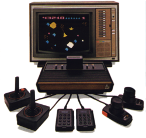 In the early 1970's, video arcade games gained commercial success for the first time. The American public was introduced to Pong, Tank, and other interactive video games which populated amusement parks, bars, and arcades. The games were successful enough to create interest for home versions, so in 1975 Atari released Home Pong and it was a smash hit. Other companies such as Magnavox and Coleco followed suit and released their own dedicated console games. Then in 1976, Fairchild Camera and Instrument introduced the Channel F system, the first cartridge based home video game system. The industry recognized that cartridge systems were the future of video gaming, and began development in that direction. In January 1977, RCA released the Studio II, another cartridge based system, although it only projected in black and white and seemed to be focused on educational titles. Then, in October 1977, Atari released the Atari VCS (Video Computer System) with an initial offering of nine games. This system, later renamed the Atari 2600, took the industry by storm and dominated the marketplace for years to come.
Because of oversupply, the Christmas season of 1977 was very rough on the video game industry, and the Atari 2600 was the only system that managed to emerge unscathed. Atari enjoyed strong sales in 1978 and a fantastic holiday season, as Atari released more games such as Outlaw, Spacewar, and Breakout. Internally however, Atari was at odds. Nolan Bushnell, the inventor of pong and founder of Atari, wound up leaving the company and purchased Pizza Time Theater, which later became the successful Chuck E. Cheese! In 1979 Atari continued their trend and released 12 more games which met with continued success. However, Atari was now facing some stiffer competition from the Mattel Intellivision and the Magnavox Odyssey2.
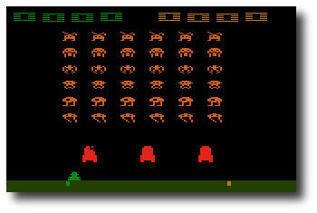 Atari needed a mega-hit in 1980 in order to squash the competition, and they found it in the home version of a game from Japan called Space Invaders. It was so popular that people were buying the Atari 2600 just so they could play Space Invaders at home. Following that, Atari released Adventure, which was the first video game to contain an Easter Egg - placing an object in a certain area revealed the programmer's name, Warren Robinett. 1980 was important for another reason - the creation of the first ever third party software producer, Activision. The company was formed by four Atari employees who were unsatisfied with the working conditions at the company. They released four games initially: Dragster, Fishing Derby, Checkers and Boxing. The games were very well received by the public, and revealed that the Atari 2600 was capable of better games than Atari themselves had been producing. Atari tried to prevent Activision from selling games, but they failed and Activision grossed $70 million that year.
By 1981, the video game industry was basically a horse race between the 2600 and the Intellivision. While the Intellivision was technologically superior in some respects, the 2600 continued to lead in sales. Atari released the home version of Asteroids, which was a huge success. Inspired by the success of Activision, another software development group called Imagic was formed. They would not release any games until 1982 however. Another company, Games by Apollo, was formed in Texas and released several games that year.
Coleco entered the market in 1982 with the release of the graphically superior Colecovision. To combat this new system, Atari produced the 5200, a technologically comparable system. The 2600 dropped $100 in price in order to remain competitive. Then a company called Arcadia released a peripheral called the Supercharger which played games in an audio cassette medium. This allowed for multiple loads and expanded the 2600's capabilities.
 Atari released Pac-Man and E.T. that year, two incredibly hyped games which
were critical flops.
Although Pac-Man sold many copies, it was considered to be a poor
translation of the arcade hit. However, there were many fantastic games
produced for the 2600 during this period, and it was still selling strong.
Atari released Pac-Man and E.T. that year, two incredibly hyped games which
were critical flops.
Although Pac-Man sold many copies, it was considered to be a poor
translation of the arcade hit. However, there were many fantastic games
produced for the 2600 during this period, and it was still selling strong.
Ever since the inception of Activision, Atari had been fighting to keep third parties from producing cartridges which they felt were stealing profits from them. Finally the issue was settled when Atari agreed to allow third party manufacturing in exchange for a royalty. Suddenly software companies began popping up all over, and 1982 saw releases from companies like Venturevision, Spectravision, Telesys, CBS, 20th Century Fox, US Games, M Network, Tigervision, Data Age, Imagic and Coleco. There was even a company that released a line of X-Rated games for the 2600 called Mystique. The year was financially successful for Atari, however there seemed to be a glut of software. Although there were many quality titles still produced, there was an increasing number of rushed games as manufacturers attempted to cash in on the craze.
More companies jumped on the band wagon in 1983. Zimag, Ultravision, Amiga, and others were also producing games and peripherals. It seemed as if there was just too much product to meet the demand, and as it turned out there was. By the end of the year, companies began folding. US Games, Data Age, Games by Apollo, Telesys and others all closed their doors from poor sales. A video game crash was occurring, and all companies were taking it on the chin.
1984 was a much more subdued year for the Atari 2600, and the price of the system had now dropped to $40-$50. Many were saying that the video game industry was dead. However, Atari surprised everyone by announcing the release of the 7800, and also promising more 2600 games with improved graphics and sound. Unfortunately, neither of these things happened in 1984 because Atari sold their home video game division to Jack Tramiel who believed that home computers would replace video game systems. No further mention of the 2600 or 7800 was made that year, and it appeared that they might be dead.
1985 was another very quiet year for Atari and video games in general, and only a few games were released for the 2600. Activision produced Cosmic Commuter and Ghostbusters, but with little fanfare or marketing, these games did not sell well. However, because of the huge game library and cheap price, Atari still sold over a million 2600 consoles in 1985.
There were very few plans for home video game systems by any company in 1986, since the market appeared to be dead. Then, to most people's surprise, Nintendo brought the NES to America and it was a smash hit, proving that video games still had a place in the US. Atari decided that maybe it would be a good idea to release the 7800 units it had in storage, and produce some more 2600 games. The 7800 was released with only 3 games initially available, although it was compatible with the 2600 library. They also redesigned the 2600 as the 2600 Jr., a machine with the same abilities, but a new look and marketing campaign. It was sold for less than $50.
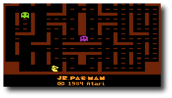 Video games were once again selling phenomenally in 1987. Atari released several new titles, including Jr. Pac-Man, and also licensed a number of games from other companies such as Donkey Kong and Q*Bert. These new titles sold for $10-$15. Interestingly, a number of titles began appearing again from third part companies such as Epyx, Froggo, and Exus. It seemed that the 2600 was not dead yet!
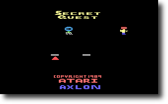 In 1988, Atari rehired Nolan Bushnell and announced a number of new titles, including Secret Quest, a game written by Mr. Bushnell himself. Atari continued to manufacture these games even until 1989. However, it was apparent that the 2600, after its introduction over a decade ago, was finally at the end of its run. Although it was still produced and marketed outside of the US, the Atari 2600 finished its run in America. No other console has had such a long history or sold as many systems in the U.S.
Today, the 2600 still has a large number of fans who remember the countless games played over the years, and the years to come. There are even games being produced by hobbyists, some of them quite professionally, being released on newly burnt cartridges with labels and manuals. And the recent trend in retrogaming has brought many more video game fans to rediscover the 2600, and it continues to live on 22 years after its release!
Alexander Bilstein
February 1999
Stella is a freely distributed multi-platform Atari 2600 VCS emulator; originally developed for Linux by Bradford W. Mott, it is now maintained by Stephen Anthony. Stella allows you to enjoy all of your favorite 2600 games once again by emulating the 2600's hardware with software. Stella is written in C++, which allows it to be ported to other operating systems and architectures. Since its original release Stella has been ported to AcornOS, AmigaOS, DOS, FreeBSD, Linux, macOS, OpenStep, OS/2, Unix, and Windows, as well as consoles such as Sega Dreamcast, GP2X, Nintendo DS and Playstation Portable (among others).
The following sections outline the basic system requirements for running Stella under various operating systems.
General (required for all versions of Stella)
- SDL version 2.0.5 or greater, latest version highly recommended
- 15/16 bit color minimum; 24/32 bit color graphics card highly recommended
- Enough RAM for the OS + 256MB RAM for the emulation; 512MB+ highly recommended
- Joysticks or gamepads are highly recommended
- Mouse or Stelladaptor/2600-daptor with real paddles required for paddle emulation
- Some ROM images (see AtariAge for more information)
Linux/UNIX
The Linux version of Stella is designed to work on a Linux Workstation with the following:
- i386 or x86_64 class machine, with 32 or 64-bit distribution
- Other architectures (MIPS, PPC, PPC64, etc.) have been confirmed to work, but aren't as well tested as i386/x86_64
- GNU g++ v/7 or Clang v/5 (with C++17 support) and the make utility are required for compiling the Stella source code
Macintosh
The Mac version of Stella is designed to work on an Apple Macintosh with the following:
- macOS 10.7 or above
- 64-bit Intel processor
- Xcode 8.0 is required to compile the Stella source code
Windows
The Windows version of Stella is designed to work on Windows 7/8/10/11 with the following:
- Visual C++ 2019 Community is required to compile the Stella source code
Other
Stella is extremely portable, and in its lifetime has been ported to almost every platform where the SDL library exists. It is 32/64-bit and endian clean in Linux/Unix, macOS and Windows. The Stella Team is interested in hearing about any problems you may encounter with diverse operating systems and CPU types.
Stella is distributed in both source and binary form. In general, you should always download and install the appropriate binary version. Compiling from source is only recommended for developers, or if the binary version doesn't work for some reason. Once you have a Stella distribution you should follow the instructions for your operating system given below.
Linux/UNIX
- Binary DEB (stella-release-1_arch.deb)
- Install the binary DEB with the following command:
dpkg -i stella-release-1_arch.deb- Binary RPM (stella-release-1.arch.rpm)
- Install the binary RPM with the following command:
rpm -Uvh stella-release-1.arch.rpm- Building and installing from source code
- See the developers build instructions at the Stella Development Page.
Macintosh
- Binary DMG file (Stella-release-macos.dmg)
- Double-click the disk image, open the 'Stella' folder, then copy the Stella.app package to your 'Applications' folder.
- Building and installing from source code
- See the developers build instructions at the Stella Development Page.
Windows
Note: Stella does not support paths and names with special chars (e.g. é, œ, š, ...) for Windows.
- Binary EXE installer (stella-release-arch.exe)
- Double-click on the installer and follow the onscreen instructions
- Binary ZIP file (stella-release-windows.zip)
- Unzip the binary ZIP file using Winzip or Total Commander
- Copy the contents of either 32-bit or 64-bit directory somewhere on your system
- Building and installing from source code
- See the developers build instructions at the Stella Development Page.
Cartridges
Most games for the Atari 2600 came on cartridges. A cartridge usually consists of a single Read Only Memory (ROM) chip which contains the data and code for the game. Plugging a cartridge into the Atari 2600 allows the 2600's microprocessor to access the program stored on the cartridge.
In a similar way you must "plug" a copy of a cartridge into Stella when you want to play it. Having a ROM image/BIN file of the cartridge allows you to do this. A ROM image is a file, which contains the actual data and code read from the cartridge. There are several ways to obtain a ROM image of a cartridge:
- Search around the internet and find ROM images to download (websites such as AtariAge and AtariMania/RomHunter may be useful). Many homebrewers make their ROMs available too.
- You can purchase the Atari 2600 Action Packs by Activision and use their ROM images
- If you're handy with a soldering iron then you can design and build a device that plugs into a PC and read the data from the cartridge
WARNING: It may be illegal to use ROM images of games that you do not actually own since these games may still be copyrighted.
Supercharger Cassettes
Supercharger games were not stored on cartridges instead they were stored on cassette tapes. The Supercharger, which plugged into the Atari 2600's cartridge slot, loaded games into its 6K of Random Access Memory (RAM) using a standard audio cassette player. The Supercharger also supported multi-loading, which allowed games to be broken into several segments and loaded at different times. This was useful for large games which had distinct parts such as role playing games.
Most of the available Supercharger ROM images are stored in 8448 bytes files. However, ROM images of multi-load games are sometimes stored in a set of 8448 byte files. The names of these files have a two character sequence number in them which indicates what load they are. The sequence starts with zero, skips a few numbers and then increments by one.
Stella supports multi-load games, however, the set of ROM images must be combined into a single ROM image file. For example to create a multi-load ROM image file for Survival Island you would do the following under Unix:
% cat survivl0.bin survivl6.bin survivl7.bin > survivl.binor to create it under DOS you would:% copy /b survivl0.bin+survivl6.bin+survivl7.bin survivl.binOnce you have the multi-load ROM image file, survivl.bin in this case, you can play the game using it.
Supported File formats
Stella supports ROMs ending with extensions .a26, .bin, .rom, and .zip. For the ZIP archive format, Stella will look into the archive and if it contains only one ROM image file, Stella will automatically load it. If an archive contains many such files, Stella will display a virtual filesystem with the contents of the archive. This can be then browsed like a normal directory.
Other extensions are also possible, namely to force a specific bankswitch scheme. Normally, the bankswitching scheme for a ROM is determined automatically, or manually by setting a ROM property, and you never have to do anything yourself. However, it is also possible to force the bankswitch type to use by adding a special filename extension. These extensions are listed in the ROM properties section under Cart.Type -> File Extension.
Note: These extensions are the same as those used by the Harmony Cart and Unocart and are not case-sensitive, so you can name your files and have them work across all applications. Again, to be clear, this is only necessary when you want to override the default bankswitching scheme for a ROM. This will not normally be necessary.
Once Stella is installed and you have some ROM images you're almost ready to start playing.
Integrated GUI
Stella contains an integrated GUI for all ports. Commandline support is also available for those who want to use it.
If you start Stella and do not specify a ROM image, it will start in 'ROM Launcher' mode:
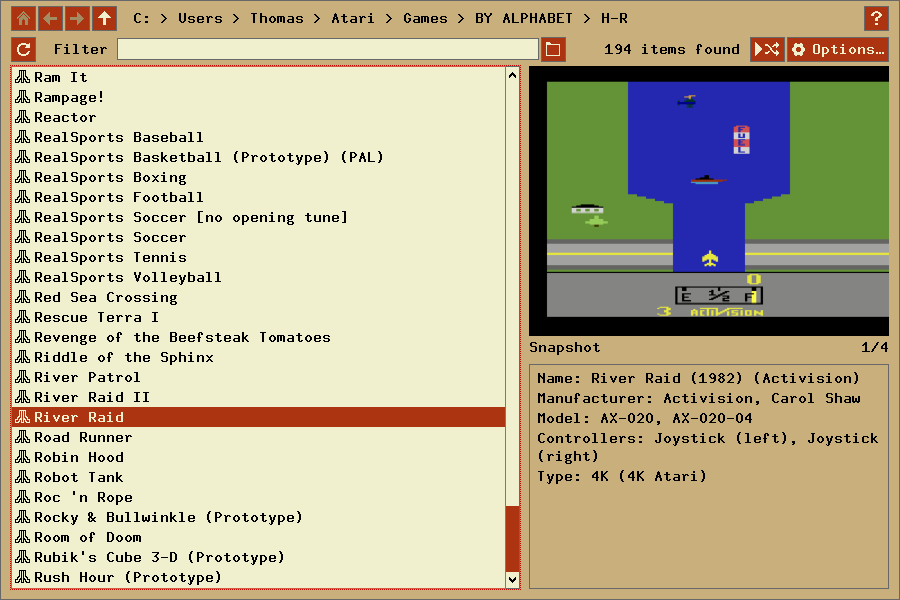If this is your first time starting Stella, you may have to navigate to your ROMs. The path of the first ROM you play automatically defines the default ROM path. You can change it later in the ROM Launcher dialog.
At this point, you may want to set the locations for snapshot images. This is described in more detail in ROM Launcher. These settings are optional, and can be left at the defaults if you won't be using snapshots in the ROM launcher.
You can start emulation by selecting a ROM and pressing 'Enter' or clicking 'Select', or double-clicking a ROM. Note that some games require you to 'Reset' the console before you start playing. In this case, you need to hit the virtual reset switch, which by default is the F2 key. Also, some games may require that you press the joystick fire button to begin, which by default is the Left Control or Space key(s), or button 0 on your joystick. If a game uses a more complex controller, see Getting Started - Keyboard Layout for more information. To exit a game and re-enter the ROM launcher, press the 'Escape' key.
Using the 'Search' textbox in the upper row of the ROM launcher, the listing can be narrowed down, showing only the ROMs that match the pattern you enter.
While the file listing is in focus, you can type some characters, and the listing will 'jump' to the file that matches what you typed. This is case-insensitive. Hold down the Shift key on the first character to select directories instead. The delay between successive keypresses being treated as part of one word is controlled by the 'listdelay' option; see User Interface Settings to change this setting.
Command Menu
While playing a game, normally one would use the keyboard shortcuts for controlling the 'virtual' switches in Stella (e.g. the commands associated with the function keys as described in Playing a Game - Hotkeys). However, another alternative is available. Pressing the '\' key (default) toggles a command menu dialog as follows:
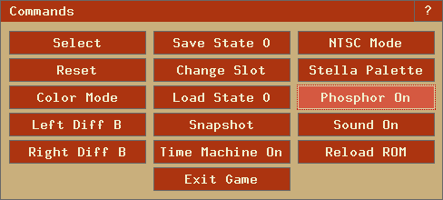
This dialog contains a set of buttons that represent the same functionality as the function keys and display the current state. You may find this useful if you cannot remember all the function key events, or you wish to use Stella without a keyboard (e.g. in a standalone gaming system).
Note: Clicking the `?` at the top right opens this document at the related paragraph. This works for almost all dialogs. There is also a hotkey defined for help (see Hotkeys).
The Atari 2600 console controls and controllers are mapped to the computer's keyboard as shown in the following tables. However, most of these events can be remapped to other keys on your keyboard or buttons on your joystick (see Advanced Configuration - Event Remapping). The tables below show the default settings.
Note: All key names are based on the US QWERTY keyboard layout. If you use a different layout some keys may differ. You can use the following layout image as reference where to find the US keys on your keyboard.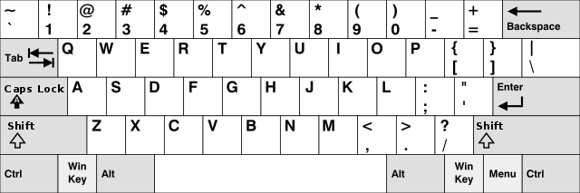
Console Controls (can be remapped)
Function Key (Standard) Key (macOS) Exit Stella Control + Q Cmd + Q Exit game, enter ROM Launcher Escape Escape Enter/exit Options Menu Tab/Escape Tab/Escape Enter/exit Command Menu Backslash (\)/Escape Backslash (\)/Escape Enter/exit Debugger Backquote (`)/Escape Backquote (`)/Escape Select Game F1 F1 Reset Game F2 F2 Color TV F3 F3 Black/White TV F4 F4 Toggle Black/White TV - - Toggle 7800 pause ¹ Alt + F3 Cmd + F3 Left Player Difficulty A F5 F5 Left Player Difficulty B F6 F6 Right Player Difficulty A F7 F7 Right Player Difficulty B F8 F8 Save state to current slot F9 F9 Save all Time Machine states Alt + F9 Cmd + F9 Change to previous state slot Shift + F10 Shift + F10 Change to next state slot F10 F10 Automatically change state slot Alt + F10 Cmd + F10 Load state from current slot F11 F11 Load all states into Time Machine Alt + F11 Cmd + F11 Save PNG snapshot F12 F12 Pause/resume emulation Pause Shift-Cmd + P ¹ only if "Console" is set to "Atari 7800" in Developer Settings. Joystick, Booster Grip (¹), Sega Genesis (²) & Joy 2B+ (³) Controller (can be remapped)
Paddle Controller (digital emulation) (can be remapped)
Driving Controller (can be remapped)
Trackball & Light Gun Controller (uses mouse, left port only)
Function Left Trackball Key Fire Same as Left Joystick 'Fire' Keyboard Controller (can be remapped)
Kid Vid Voice Module (can be remapped via Keyboard Controller and Console Controls)
Function Key Difficulty Switches ¹ Start game #1 8 (Right Pad Button '1') F6 (Left = A), F8 (Right = B) Start game #2 9 (Right Pad Button '2') F5 (Left = B), F8 (Right = A) Start game #3 0 (Right Pad Button '3') F6 (Left = B), F7 (Right = B) Skip current song (except initial songs of Berenstain Bears and Harmony Smurf) ² P (Right Pad Button '6'), F1 ('Select Game') - ¹ Press F1 ('Select Game') to start the selected game. ² F4 ('Black/White TV') skip all allowed songs. CompuMate Controller (cannot be remapped)
CompuMate Key 0 - 9 0 - 9 A - Z A - Z Comma Comma Period Period Func Control (left or right) Shift Shift (left or right) Enter Return/Enter Space Space Func-Space Backspace + + or Shift + 1 - - or Shift + 2 * Shift + 3 / / or Shift + 4 = = or Shift + 5 ? ? (Shift + /) or Shift + 6 $ Shift + 7 [ [ or Shift + 8 ] ] or Shift + 9 " " (Shift + ') or Shift + 0 Audio & Video Keys (can be remapped)
Function Key (Standard) Key (macOS) Toggle sound Control + ] Control + ] Decrease volume Alt + [ Cmd + [ Increase volume Alt + ] Cmd + ] Switch to next larger zoom level in windowed mode, toggle stretching in fullscreen mode Alt + = Cmd + = Switch to next smaller zoom level in windowed mode, toggle stretching in fullscreen mode Alt + - Cmd + - Toggle windowed/fullscreen mode Alt + Return Cmd + Return Toggle adapting display refresh rate to game frame rate Note: Not available for macOS, also some renderers may not support this Alt + R - Decrease overscan in fullscreen mode Shift + PageDown Shift-Fn + Down arrow Increase overscan in fullscreen mode Shift + PageUp Shift-Fn + Up arrow Move display down (uses "Display.VCenter") Alt + PageDown Cmd-Fn + Down arrow Move display up (uses "Display.VCenter") Alt + PageUp Cmd-Fn + Up arrow Toggle aspect ratio correct scaling Shift-Control + C Shift-Control + C Decrease vertical display size Shift-Alt + PageUp Shift-Cmd-Fn + Up arrow Increase vertical display size Shift-Alt + PageDown Shift-Cmd-Fn + Down arrow Switch to previous display format (NTSC/PAL/SECAM etc.) Shift-Control + F Shift-Control + F Switch to next display format (NTSC/PAL/SECAM etc.) Control + F Control + F Toggle display interpolation (not available for Software renderer) Control + I Control + I Toggle bezel display Control + B Control + B These settings can also be changed using Global Keys Palettes Keys (can be remapped)
Function Key (Standard) Key (macOS) Select previous palette (Standard/z26/User/Custom) Shift-Control + P Shift-Control + P Select next palette (Standard/z26/User/Custom) Control + P Control + P Select previous palette attribute Shift-Alt + 9 Shift-Cmd + 9 Select next palette attribute Alt + 9 Cmd + 9 Decrease selected palette attribute Shift-Alt + 0 Shift-Cmd + 0 Increase selected palette attribute Alt + 0 Cmd + 0 These settings can also be changed using Global Keys TV Effects Keys (can be remapped)
Function Key (Standard) Key (macOS) Select previous TV effects preset Shift-Alt + 1 Shift-Cmd + 1 Select next TV effects preset Alt + 1 Cmd + 1 Select previous 'Custom' mode attribute (*) Shift-Alt + 2 Shift-Cmd + 2 Select next 'Custom' mode attribute (*) Alt + 2 Cmd + 2 Decrease 'Custom' selected attribute value (*) Shift-Alt + 3 Shift-Cmd + 3 Increase 'Custom' selected attribute value (*) Alt + 3 Cmd + 3 Select previous 'phosphor' enabling mode - - Select next 'phosphor' enabling mode Ctrl-Alt + P Ctrl-Cmd + P Toggle 'phosphor' mode Alt + P Cmd + P Decrease 'phosphor' blend Shift-Alt + 4 Shift-Cmd + 4 Increase 'phosphor' blend Alt + 4 Cmd + 4 Decrease scanlines intensity Shift-Alt + 5 Shift-Cmd + 5 Increase scanlines intensity Alt + 5 Cmd + 5 Switch to previous scanlines mask Shift-Alt + 6 Shift-Cmd + 6 Switch to next scanlines mask Alt + 6 Cmd + 6 These settings can also be changed using Global Keys Items marked as (*) will also switch to 'Custom' TV effects mode Input Devices & Ports Keys (can be remapped)
Function Key (Standard) Key (macOS) Decrease analog joystick dead zone for digital controllers Shift-Control + F1 Shift-Control + F1 Increase analog joystick dead zone for digital controllers Control + F1 Control + F1 Decrease analog joystick dead zone for analog controllers Shift-Control-Alt + F1 Shift-Control-Cmd + F1 Increase analog joystick dead zone for analog controllers Control-Alt + F1 Control-Cmd + F1 Decrease analog paddle sensitivity Shift-Control + F2 Shift-Control + F2 Increase analog paddle sensitivity Control + F2 Control + F2 Decrease analog paddle linearity Shift-Control-Alt + F2 Shift-Control-Cmd + F2 Increase analog paddle linearity Control-Alt + F2 Control-Cmd + F2 Decrease analog paddle dejitter averaging Shift-Control + F3 Shift-Control + F3 Increase analog paddle dejitter averaging Control + F3 Control + F3 Decrease analog paddle dejitter reaction Shift-Control + F4 Shift-Control + F4 Increase analog paddle dejitter reaction Control + F4 Control + F4 Decrease digital paddle sensitivity Shift-Control + F5 Shift-Control + F5 Increase digital paddle sensitivity Control + F5 Control + F5 Toggle autofire Alt + A Cmd + A Decrease autofire rate Shift-Control + A Shift-Control + A Increase autofire rate Control + A Control + A Toggle allowing all four directions on joystick to be pressed simultaneously Control + F6 Control + F6 Toggle use of modifier key combos Control + F7 Control + F7 Swap Stelladaptor/2600-daptor port ordering Control + 1 Control + 1 Select previous controllers emulated by the mouse (all, analog, none) Shift-Control + F8 Shift-Control + F8 Select next controllers emulated by the mouse (all, analog, none) Control + F8 Control + F8 Decrease mouse paddle sensitivity Shift-Control + F9 Shift-Control + F9 Increase mouse paddle sensitivity Control + F9 Control + F9 Decrease mouse trackball sensitivity Shift-Control + F10 Shift-Control + F10 Increase mouse trackball sensitivity Control + F10 Control + F10 Decrease digital and mouse driving controller sensitivity Shift-Control + F11 Shift-Control + F11 Increase digital and mouse driving controller sensitivity Control + F11 Control + F11 Select previous mouse cursor visiblity option (-UI, -Emulation/-UI, +Emulation/+UI, -Emulation/+UI, +Emulation) Shift-Control + F12 Shift-Control + F12 Select next mouse cursor visiblity option (-UI, -Emulation/-UI, +Emulation/+UI, -Emulation/+UI, +Emulation) Control + F12 Control + F12 Toggle grab mouse Control + G Control + G Select previous left port controller type Shift-Control + 2 Shift-Control + 2 Select next left port controller type Control + 2 Control + 2 Select previous right port controller type Shift-Control + 3 Shift-Control + 3 Select next right port controller type Control + 3 Control + 3 Toggle swap left and right controller ports Control + 4 Control + 4 Toggle swap paddles Control + 5 Control + 5 Decrease horizontal center of paddles Shift-Control + 6 Shift-Control + 6 Increase horizontal center of paddles Control + 6 Control + 6 Decrease vertical center of paddles Shift-Control + 7 Shift-Control + 7 Increase vertical center of paddles Control + 7 Control + 7 Switch mouse to previous controller emulation mode(see Controller Properties) Shift-Control + 0 Shift-Control + 0 Switch mouse to next controller emulation modes(see Controller Properties) Control + 0 Control + 0 Decrease mouse paddle axes range Shift-Control + 8 Shift-Control + 8 Increase mouse paddle axes range Control + 8 Control + 8 These settings can also be changed using Global Keys Developer Keys (can be remapped)
Function Key (Standard) Key (macOS) Toggle Developer Settings sets (player/developer) Alt + D Cmd + D Toggle frame stats(scanline count/FPS/BS type etc.) Alt + L Cmd + L Toggle TIA Player0 object Alt + Z Cmd + Z Toggle TIA Player1 object Alt + X Cmd + X Toggle TIA Missile0 object Alt + C Cmd + C Toggle TIA Missile1 object Alt + V Cmd + V Toggle TIA Ball object Alt + B Cmd + B Toggle TIA Playfield object Alt + N Cmd + N Toggle all TIA objects Alt + Comma Cmd + Comma Toggle TIA Player0 collisions Shift-Alt + Z Shift-Cmd + Z Toggle TIA Player1 collisions Shift-Alt + X Shift-Cmd + X Toggle TIA Missile0 collisions Shift-Alt + C Shift-Cmd + C Toggle TIA Missile1 collisions Shift-Alt + V Shift-Cmd + V Toggle TIA Ball collisions Shift-Alt + B Shift-Cmd + B Toggle TIA Playfield collisions Shift-Alt + N Shift-Cmd + N Toggle all TIA collisions Shift-Alt + Comma Shift-Cmd + Comma Toggle TIA 'Fixed Debug Colors' mode Alt + . Cmd + . Toggle PAL color-loss effect Control + L Control + L Toggle TV 'Jitter' effect Alt + J Cmd + J Decrease TV jitter sensitivity Shift-Control-Alt + J Shift-Control-Cmd + J Increase TV jitter sensitivity Control-Alt + J Control-Cmd + J Decrease TV jitter roll time Shift-Control + J Shift-Control + J Increase TV jitter roll time Control + J Control + J These settings can also be changed using Global Keys Global Keys (can be remapped)
These keys allow selecting and changing settings without having to remember the dedicated hotkeys. The global keys are grouped by 'Audio & Video', 'Input Devices & Ports' and 'Debug' settings.
Function Key (Standard) Key (macOS) Select previous setting group Control + End Control-Fn + Left arrow Select next setting group Control + Home Control-Fn + Right arrow Select previous setting End Fn + Left arrow Select next setting Home Fn + Right arrow Decrease current setting PageDown Fn + Down arrow Increase current setting PageUp Fn + Up arrow Notes:
- Only available if UI messages are enabled.
- Currently not available settings are automatically skipped.
- If a setting was previously selected via a dedicated hotkey, its value can also be directly changed with the global keys.
Other Emulation Keys (can be remapped)
Function Key (Standard) Key (macOS) Load previous game in ROM (multicart ROM) Shift-Control + R Shift-Control + R Reload current ROM (singlecart ROM)
Load next game in ROM (multicart ROM)Control + R Control + R Emulate 'frying' effect Shift + Backspace Shift + Backspace Decrease emulation speed (disables 'Turbo' mode) Shift-Control + S Shift-Control + S Increase emulation speed (disables 'Turbo' mode) Control + S Control + S Toggle 'Turbo' mode (maximum emulation speed) Control + T Control + T Save continuous PNG snapshots(per interval defined in Snapshot Settings) Control-Alt + S Control-Cmd + S Save continuous PNG snapshots (every frame) Shift-Control-Alt + S Shift-Control-Cmd + S Open the High Scores dialog. Insert Insert Toggle 'Time Machine' mode Alt + T Cmd + T Enter/Exit the Time Machine dialog Shift + T to enter, Shift + T/Escape to exit and continue with emulation Shift + T to enter, Shift + T/Escape to exit and continue with emulation Playback the Time Machine from current state (from the TM dialog only) Space Space Start/Stop playback (exist/enters the Time Machine dialog) Shift + Space Shift + Space Rewind by one state (enters the Time Machine dialog) Alt + Left arrow Cmd + Left arrow Rewind by 10 states (enters the Time Machine dialog) Shift-Alt + Left arrow Shift-Cmd + Left arrow Rewind all states (enters the Time Machine dialog) Alt + Down arrow Cmd + Down arrow Unwind by one state (enters the Time Machine dialog) Alt + Right arrow Cmd + Right arrow Unwind by 10 states (enters the Time Machine dialog) Shift-Alt + Right arrow Shift-Cmd + Right arrow Unwind all states (enters the Time Machine dialog) Alt + Up arrow Cmd + Up arrow Enter/Exit the PlusROM backends setup dialog Shift-Control-Alt + P to enter, Shift-Control-Alt + P/Escape to exit and continue with emulation Shift-Control-Cmd + P to enter, Shift-Control-Cmd + P/Escape to exit and continue with emulation UI Keys (can be remapped)
Function Key (Standard) Key (macOS) Controller Open context-sensitive help F1 Shift-Cmd + ? - Move Up Up arrow Up arrow Up Move Down Down arrow Down arrow Down Move Left Left arrow Left arrow Down Move Right Right arrow Right arrow Up Move Home Home Home - Move End End End - Move Page Up Page Up Page Up - Move Page Down Page Down Page Down - OK - - Button 1/X + Up, Button 2/A Cancel Escape Escape - Select item Return/Enter/Space Return/Enter/Space Button 1/X Move to previous object Shift + Tab Shift + Tab Left Move to next object Tab Tab Right Move to previous tab Shift-Control + Tab Shift-Control + Tab Button 1/X + Left, Button 4/Y Move to next tab Control + Tab Control + Tab Button 1/X + Right, Button 3/B Toggle windowed/fullscreen mode Alt + Return Cmd + Return - Toggle UI theme Alt + T Cmd + T - Exit Stella Control + Q Cmd + Q - Additional Launcher Keys (most cannot be remapped)
Function Key (Standard) Key (macOS) Controller Go to initial directory (also in other file dialogs) Alt + Home Cmd + Home - Go to previous directory in history (also in other file dialogs) Alt + Left arrow Cmd + Left arrow - Go to next directory in history (also in other file dialogs) Alt + Right arrow Cmd + Right arrow - Go to parent directory (also in other file dialogs) Backspace, Alt + Up arrow Backspace, Cmd + Up arrow - Move Page Up Page Up Page Up Button 1/X + Left Move Page Down Page Down Page Down Button 1/X + Right Remove from 'Recently Played' or 'Most Popular' folder Control + X Control + X - Toggle favorite Control + F Control + F - Open Game properties dialog Control + G Control + G - Open Power-On options dialog Control + P Control + P Button 2/A Open High Scores dialog (if available for selected ROM) Control + H Control + H - Toggle file extensions display Control + E Control + E - Toggle search ROMs in subdirectories too Control + D Control + D - Toggle favorites sorting (normal or alternative) Control + S Control + S - Reload ROM listing Control + R Control + R - Load random ROM Alt + R Cmd + R - Open Options dialog Control + O Control + O Button 4/Y Open context menu - - Hold Button UI Keys in Text Editing areas (cannot be remapped)
Function Key (Standard) Key (macOS) Move cursor to previous character Left arrow Left arrow Move cursor to next character Right arrow Right arrow Move cursor to beginning of current word Control + Left arrow Option + Left arrow Move cursor to beginning of next word Control + Right arrow Option + Right arrow Move cursor to beginning of line Home Home, Control + A, Cmd + Left arrow Move cursor to end of line End End, Control + E, Cmd + Right arrow Delete character to left of cursor Backspace Backspace Delete character to right of cursor Delete, Control + D Delete, Control + D Delete word to left of cursor Control + Backspace, Control + W Option + Backspace, Control + W Delete word to right of cursor Control + Delete, Alt + D Option + Delete Delete all text to beginning of line Control + Home, Control + U Cmd + Backspace, Control + U Delete all text to end of line Control + End, Control + K Control + K Select character to left of cursor Shift + Left arrow Shift + Left arrow Select character to right of cursor Shift + Right arrow Shift + Right arrow Select all text to beginning of current word Shift-Control + Left arrow Shift-Option + Left arrow Select all text to beginning of next word Shift-Control + Right arrow Shift-Option + Right arrow Select all text to beginning of line Shift + Home Shift + Home, Shift-Control + A, Shift-Cmd + Left arrow Select all text to end of line Shift + End Shift + End, Shift-Control + E, Shift-Cmd + Right arrow Select all text Control + A Cmd + A Cut selected text Control + X, Shift + Delete Cmd + X Copy selected text Control + C, Control + Insert Cmd + C Paste at cursor and replace selection Control + V, Shift + Insert Cmd + V Undo last operation Control + Z Cmd + Z Redo last operation Control + Y, Shift-Control + Z Cmd + Y, Shift-Cmd + Z
Some Atari (virtual) controllers are simulated with more than one computer controller, and there are several special cases where controllers are active in certain modes only, as the table below shows. Items marked as (+ extra) indicate that the computer controller may not have enough buttons/axes etc. to fully emulate the device, so extra functionality must be mapped to other controllers.
Computer Virtual
ControllerKeyboard Joystick Mouse
(auto mode)Mouse
(specific axis)Stelladaptor/
2600-daptorJoystick ✓ ✓ ✓ ✕ ✓ Paddles ✓ ✓ ✓ ✓ ✓ Booster Grip ✓ ✓ (+ extra) ✓ (+ extra) ✕ ✓ (+ extra) Sega Genesis ✓ ✓ (+ extra) ✓ ✕ ✕ Joy 2B+ ✓ ✓ (+ extra) ✓ (+ extra) ✕ ✕ (+ extra) Keyboard ✓ ✓ (+ extra) ✕ ✕ ✓ (2600-daptor II) Driving ✓ ✓ ✓ ✕ ✓ Trak-Ball/Mouse ✕ ✕ ✓ ✓ (axis ignored) ✓ CompuMate ✓ ✕ ✕ ✕ ✕ Light Gun ✕ ✕ ✓ ✓ (axis ignored) ✕ MindLink ✕ ✕ ✓ ✓ (axis ignored) ✕ AtariVox N/A N/A N/A N/A voice (2600-daptor II) SaveKey N/A N/A N/A N/A N/A
A special feature of Stella is the 'Time Machine' mode. In this mode, Stella automatically creates savestates in regular, user-defined intervals. At any time, the user can interrupt the current emulation and navigate back and forth within the saved timeline. This can be done either by using the Time Machine hotkeys described in Hotkeys - Other Keys or by using the Time Machine dialog. This dialog is automatically entered when using one of the Time Machine hotkeys. The hotkeys continue to function within the dialog.
Time Machine dialog:
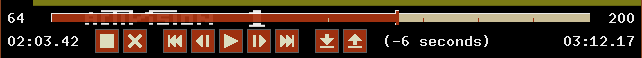 The dialog items are explained in the following two tables.
Top row (left to right)
Item Description Current state Shows the currently loaded state's number 'Timeline' slider Shows the position of the current state in the recorded timeline. A state can be selected by dragging the slider with the mouse. To visualize state compression, small marks split the timeline into five, equally sized state number intervals. Total states Shows the total number of save states in the Time Machine Bottom row (left to right)
Item Description Current time Shows the time of the currently selected state, relative to the first one 'Start/Stop' button Starts or stops the Time Machine 'Exit' button Exits the dialog and continues emulation from the current state 'Rewind All' button Navigates back to the begin of the timeline 'Rewind One' button Navigates back by one state 'Playback' button Starts playback from the current state 'Unwind One' button Navigates forward by one state 'Unwind All' button Navigates forward to the end of the timeline 'Save All' button Saves all Time Machine states to disk 'Load All' button Loades all states from disk into Time Machine Navigation info Informs about the interval of the user's last Time Machine navigation. The interval can vary if the timeline is compressed. Total time Shows the total time covered by the save states (aka 'Horizon')
Instead of using a mouse to click the buttons, you can also use the defined Hotkeys. Plus a few extra hotkeys for handling single states and saving snapshots.The 'Time Machine' mode can be configured by the user. For details see Developer Options - Time Machine tab.
Stella allows the user to save high scores when the required definitions for a ROM exist. For a number of popular classic and homebrew games (see High Scores - supported games) this has been done already.
To save a score, the High Score dialog can be opened by pressing 'Insert' any time while a game is played. It will provide the current variation and score and allow the user to add this as a new high score. Of course this makes most sense when a game is over. Note: In multiplayer games, only the score of the first player can be saved.
High Scores dialog:
For details how to configure high scores definitions for a game see High Scores Properties.
The default options in Stella are meant to cater to as many situations as possible. As such, you may never need to change many of its options. However, Stella is very configurable, and if you want to change its behaviour in some way, there's likely a configuration option to do so. The remainder of this (lengthy) section details every configurable option.
In addition to the built in ROM launcher, Stella can also be used from the command line (assuming your operating system has a command line).
To run Stella from the command line, use the following format:
stella [options ...] ROM_FILENAMEOptions ('0' or 'false' indicates false, '1' or 'true' indicates true, others are self-explanatory):
Argument Description Use the given rendering backend (where applicable); default is the best available mode detected. Synchronize screen updates to the vertical blank period. This can result in smoother updates, and eliminate tearing. Enable fullscreen mode. Center all windows (if possible). Set the window position in windowed emulator mode. Set the display for Stella's emulator. Set the palette to either normal Stella, the one used in the z26 emulator, a user-defined palette, or a custom palette generated from user-defined parameters. Adjust phase shift of 'custom' NTSC palette. Adjust phase shift of 'custom' PAL palette. Adjust red scale of 'custom' palette (range -1.0 to 1.0). Adjust red shift of 'custom' palette (range -22.5 to 22.5). Adjust green scale of 'custom' palette (range -1.0 to 1.0). Adjust green shift of 'custom' palette (range -22.5 to 22.5). Adjust blue scale of 'custom' palette (range -1.0 to 1.0). Adjust blue shift of 'custom' palette (range -22.5 to 22.5). Adjust hue of current palette (range -1.0 to 1.0). Adjust saturation of current palette (range -1.0 to 1.0). Adjust contrast of current palette (range -1.0 to 1.0). Adjust brightness of current palette (range -1.0 to 1.0). Adjust gamma of current palette (range -1.0 to 1.0). Enable autodetection of PAL-60 based on colors used.. Enable autodetection of NTSC-50 based on colors used.. Control the emulation speed (as a percentage, 10 - 1000). Enable 'Turbo' mode for maximum emulation speed. Enable or disable display of message in the UI. Note that messages indicating serious errors override this setting, and are always shown. Enable or disable automatic pause/continue of emulation when Stella loses/gains focus. Enable or disable emulation dimming in pause mode. Enable or disable bezel display. Specifies from where bezel images are loaded. Enable bezels in windowed modes as well. Enable manually set bezel's emulation window position. Set left position of bezel's emulation window. Set right position of bezel's emulation window. Set top position of bezel's emulation window. Set bottom position of bezel's emulation window. Enable or disable sound generation. Set the volume. Set the audio device (0 = default). Set an audio preset. Numbers in sequence represent presets for 'custom', 'low quality, medium lag', 'high quality, medium lag', 'high quality, low lag' and 'ultra quality, minimal lag'. Set the number of samples in a single fragment processed by the audio driver. Set sound sample output frequency. Set resampling quality to low (1), high (2) or ultra (3). Set number of additional half-frames to prebuffer. Set maximum number of additional half-frames to buffer. Enable or disable stereo mode for all ROMs. Set the pitch of Pitfall II music. Use the specified zoom level (integer) while in TIA/emulation mode. Adjust the display height of the TIA image Use interpolation for the TIA image (results in blending/smoothing of the image, not available for Software renderer). Stretch TIA image completely while in fullscreen mode, vs. keeping the correct aspect ratio. While in fullscreen mode, adapt the display's refresh rate to the game's frame rate to minimize judder. Note: Not available for macOS, also some renderers may not support this Add overscan to TIA image while in fullscreen mode Assign the colours (R)ed, (O)range, (Y)ellow, (G)reen, (P)urple and (B)lue to each graphical register P0/M0/P1/M1/PF/BL, respectively. Currently, these can be changed around to apply different colours to the respective register. Enable aspect ratio correct scaling. Blargg TV effects, 0 is disabled, next numbers in sequence represent presets for 'RGB', 'S-Video', 'Composite', 'Bad Adjust' and 'Custom' modes. Blargg TV effects 'sharpness' (only available in custom mode, range -1.0 to 1.0). Blargg TV effects 'resolution' (only available in custom mode, range -1.0 to 1.0). Blargg TV effects 'artifacts' (only available in custom mode, range -1.0 to 1.0). Blargg TV effects 'fringing' (only available in custom mode, range -1.0 to 1.0). Blargg TV effects 'bleed' (only available in custom mode, range -1.0 to 1.0). Determine how phosphor mode is enabled. If 'byrom', then the ROM properties determine whether phosphor mode is used for each ROM. Else the ROM properties entry is ignored. If 'always', then the phosphor mode is always enabled. If 'autoon', then the phosphor mode is enabled automatically. If 'auto', then the phosphor mode is enabled/disabled on automatically. Enable phosphor blending level; 0 implies no mixing, and 100 is full mixing (not recommended). Note that this doesn't actually enable phosphor mode; that is done for each ROM in the ROM properties. Higher blend values will intensify the phosphor effect. Depending on your display and personal preferences, the optimal default for you may vary. Slow LCDs (especially for office use) may only need a low blend of around 30, while fast switching gamer LCDs may need about 70 to look similar to a CRT. Set TV effects scanlines intensity, where 0 means completely off. Note: No scanlines in 1x mode snapshots Set the scanlines mask. Note: All masks (except 'standard') work better at higher zoom levels. Use the specified cheatcode (see Cheat section for description). Indicate level of logging to perform while the application is running. Zero completely disables logging (except for serious errors), while the remaining numbers show increasingly more detail. Indicate that logged output should be printed to the console/command line as it's being collected. An internal log will still be kept, and the amount of logging is still controlled by 'loglevel'. Set the joystick axis dead zone area for analog joysticks/gamepads emulating digital controllers. All values within the dead zone are treated as zero-axis values, while only those values outside are registered as valid input. Dead zone is calculated as 3200 + value * 1000. So the possible dead zone values range from 3200 to 32200 (= 10% - 98%). Set the joystick axis dead zone area for analog joysticks/gamepads emulating analog controllers. All values within the dead zone are treated as zero-axis values, while only those values outside are registered as valid input. Dead zone is calculated as value * 565. So the possible dead zone values range from 0 to 16384 (= 0% - 50%) Sensitivity for emulation of paddles when using analog controllers. Larger numbers are causing faster movement. Linearity of analog paddles. Lower numbers allow finer control around the paddle center. Strength of analog paddle input averaging. Higher values will make the movement smoother, but also less responsive. Impact of fast analog paddle movement on input averaging. Higher values will reduce the movement smoothing while the paddle is moved fast, making fast paddle movements more responsive. Sensitivity for emulation of paddles when using a digital device (i.e. joystick digital axis or button, keyboard key, etc.). Valid range of values is from 1 to 20, with larger numbers causing faster movement. Set auto fire mode on or off. Automatic trigger rate of the fire buttons in Hz (0 = disabled) Allow all 4 directions on a joystick to be pressed simultaneously. Use modifier (Shift/Alt/Control/Cmd) + x key combos. This is normally enabled, since the 'Quit' command is tied to 'Control + Q'. However, there are times when you want to disable them. E.g. a 2-player game is using either the 'F' or 'R' keys for movement, and pressing Control (for Fire) will perform an unwanted action associated with 'Control + F' or 'Control + R' default keys. Determine how to enumerate the Stelladaptor/2600-daptor devices in the order they are found: 'lr' means first is left port, second is right port, 'rl' means the opposite. Set the name of the serial port where an AtariVox is connected. Use mouse as a controller as specified by ROM properties in specific case. Always and never are self-explanatory, analog means only for analog-type devices (paddles, trackball, etc.). Sensitivity for emulation of paddles when using a mouse. Valid range of values is from 1 to 20, with larger numbers causing faster movement. Sensitivity for emulation of trackball controllers when using a mouse. Valid range of values is from 1 to 20, with larger numbers causing faster movement. Sensitivity for emulation of driving controllers when using a mouse or a digital device. Valid range of values is from 1 to 20, with larger numbers causing faster movement. Set mouse cursor state in UI/emulation modes. Lock the mouse cursor in the game window in emulation mode. Automatically change to the next available save state slot after saving a ROM state file. Automatically save no, current or all states when exiting emulation. The latter also loads all states when entering emulation. Disable Supercharger BIOS progress loading bars. Enable multi-threaded video rendering (may not improve performance on all systems). The directory to save snapshot files to. The directory to load ROM info viewer snaposhot files from. When saving snapshots, use either the internal ROM database name or the actual ROM filename. Generate single snapshot instead of many, overwriting any previous snapshots. Ignore any scaling applied to the TIA image, and save snapshot in unscaled (1x) mode. Set the interval in seconds between taking snapshots in continuous snapshot mode (currently 1 - 10). Display detailed information about the given ROM, and then exit Stella. Print relevant contents of the Stella ROM database, one ROM per line, and then exit Stella. This can be used for external frontends. Always exit to ROM launcher when exiting a ROM (normally, an exit to launcher only happens when started with the launcher). Set the window position in windowed ROM launcher mode. Set the display for the ROM launcher. Set the size of the ROM launcher. Set the size of the font in the ROM launcher. Enable bottom buttons in the ROM launcher. Display file extensions in the ROM launcher. Specifies whether the ROM launcher lists files from current directory only or all subdirectories too. Enable favorites tracking and display. Use alternative sorting in virtual favorites folders. Set number of ROMs tracked in 'Recently Played' folder (default = 20). Hide ROM Info Viewer in ROM launcher mode (0) or use the given zoom level. Note: The zoom level is converted into a percentage in the UI. Define default palette/theme for UI elements. Define alternative palette/theme for UI elements. Use alternative palette/theme for UI elements. Set the size of the font in the dialogs. Set the position of dialogs within Stella windows (0 = center). Enable the HiDPI mode which scales the UI by a factor of two. Display a popup when emulation is exited. Set the amount of time to wait between treating successive keypresses as a single word in file listings (value can range from 300-1000). Use '0' to disable list-skipping completely. Set the number of lines the mousewheel will scroll in the UI (1 - 10). Set the mouse double click speed in the UI (100 - 900 ms). Set the delay before controller input will start repeating in the UI (200 - 1000 ms). Set the controller repeat rate in the UI (2 - 30 repeats/s). Set the path where the ROM launcher will start. Make the start path follow ROM launcher navigation. Set the path to save user files (property exports, debugger saves) to. Update the user path when navigating in browser. Useful for developers, this sets the maximum size of window that can be created, allowing to simulate testing on 'smaller' systems. Override the base directory for all config files.
Note: Not available for macOSOverride the base directory for all config files by attempting to use the application directory.
Note: Only available for WindowsDefine a nickname for the PlusROM backends Define a temporary ID for the PlusROM backends (32 chars, hex) Enable filtering of bankswitch type list in Emulation Properties by ROM size. Print a help message describing these options, and then exit Stella. The following are useful to developers. Only use them if you know what you're doing! Note that in all cases, the values supplied to the arguments are not case sensitive.
Argument Description Try to differentiate between tentative code vs. data sections in the disassembler via static code analysis. See the Debugger - ROM Disassembly Settings for more information. Switch between displaying/editing GFX and PGFX sections in either binary or hexidecimal in the disassembler. Show/hide program counter addresses as labels in the disassembler. Relocate calls out of address range in the disassembler. Set the window position in windowed debugger mode. Set the display for the debugger. Set the size of the debugger window. Set the font size in the debugger window. How to use bold fonts in the debugger window. '0' means all normal font, '1' is bold labels only, '2' is bold non-labels only, '3' is all bold font. Debugger considers/ignores 'ghost' reads for trap addresses Lower-/uppercase HEX display Set a breakpoint at specified address. Immediately jump to debugger mode when starting Stella. Start the emulator with the left joystick direction/button held down (ie, use 'UF' for up and fire). After entering the emulation, you will have to press and release the direction again to release the event. Start the emulator with the right joystick direction/button held down (ie, use 'UF' for up and fire). After entering the emulation, you will have to press and release the direction again to release the event. Start the emulator with the Game Select switch held down. After entering the emulation, you will have to press and release 'Select' to release the event. Start the emulator with the Game Reset switch held down. After entering the emulation, you will have to press and release 'Reset' to release the event. Set "Cart.Type" property. See the Emulation Properties section for valid types. Same as using -bs. Set "Cart.StartBank" property. Set "Cart.Sound" property. Set "Console.LeftDiff" property. Set "Console.RightDiff" property. Set "Console.TVType" property. Set "Console.SwapPorts" property. Set "Controller.Left" property. See the Controller Properties section for valid types. Set "Controller.Left1" property for QuadTari. See the QuadTari Properties section for valid types. Set "Controller.Left2" property for QuadTari. See the QuadTari Properties section for valid types. Set "Controller.Right" property. See the Controller Properties section for valid types. Set "Controller.Right1" property for QuadTari. See the QuadTari Properties section for valid types. Set "Controller.Right2" property for QuadTari. See the QuadTari Properties section for valid types. Set both "Controller.Left" and "Controller.Right" properties. See the Controller Properties section for valid types. Set "Controller.Left1", "Controller.Left2", "Controller.Right1" and "Controller.Right2" properties for QuadTari. See the QuadTari Properties section for valid types. Set "Controller.SwapPaddles" property. Set "Controller.PaddlesXCenter" property. Set "Controller.PaddlesYCenter" property. Set "Controller.MouseAxis" property. See the Controller Properties section for valid types. Set "Display.Format" property. See the Emulation Properties section for valid formats. Set "Display.VCenter" property (-5..5). Set "Display.Phosphor" property. Set "Display.PPBlend" property, used for phosphor effect (0-100). Default is whatever is specified for tv.phosblend. The following are almost all available in two sets, one for players (prefixed by "plr.") and one for developers (prefixd by "dev."). Only use them if you know what you're doing! Note that in all cases, the values supplied to the arguments are not case sensitive.
Argument Description Select developer (1) or player (0) set. Overlay console info on the TIA image during emulation. Display detected settings info when a ROM is loaded. Select console for B/W and Pause key handling and RAM initialization. On reset, randomize the startup bank (only for selected bankswitch types). On reset, randomize the TIA registers. On reset, either randomize all RAM content, or initialize with zero (console = 2600)/startup values (console = 7800) instead. On reset, randomize the content of the specified CPU registers. When this option is enabled, peeks to hotspots return semi-random values. Set unused TIA pins to be randomly driven high or low on a read/peek. If disabled, use the last databus value for those pins instead. Since the 2600 has no dedicated R/W line, different addresses are used for RAM read or write access. If the code reads from such a write address, this causes an unwanted, semi-random write to that address. When this option is enabled, such reads interrupt emulation and the debugger is entered. Same as above. If the code writes to such a read address, nothing happens. But a developer should be made aware of it, because this indicates a problem with the code. When this option is enabled, such writes interrupt emulation and the debugger is entered. When enabled, this allows the Thumb ARM emulation to throw an exception and enter the debugger on fatal errors. When disabled, such fatal errors are simply logged, and emulation continues. Do not use this unless you know exactly what you're doing, as it changes the behaviour as compared to real hardware. When enabled, ARM emulation cycles are added to 6507 system cycles. This allows detecting timer overruns, but will also distort audio. Note: The ARM emulation cycles are only a coarse approximation. Defines the ARM cycle count correction factor (default = 0.95). Selects the emulated chip type (0 = LPC2103, 1 = LPC2104 family). This setting affects the CPU clock, the Flash memory access clock cycles and the number of Flash banks. Selects the Memory Accelerator Module (MAM) mode. Note: Mode X (3) is for testing only. It reduces Flash memory access clock cycles to always 1. When enabled, each external access (AtariVox/SaveKey EEPROM, PlusROM, Supercharger...) is signalled by a message. Set emulated TIA type. Only with 'custom' the following TIA options become relevant. Enable/disable inverted HMOVE clock phase for players (Kool Aid Man glitch). Enable/disable inverted HMOVE clock phase for missiles (Cosmic Ark stars glitch). Enable/disable inverted HMOVE clock phase for ball. Enable/disable playfield bits delayed by one color clock (stray playfield pixels in Pesco). Enable/disable playfield color delayed by one color clock (colored step borders in Quick Step!). Enable/disable earlier playfield score mode color color switch (center vertical line in Matchie). Enable/disable background color delayed by one color clock (stray pixels in Indy 500 menu hack). Enable/disable player swap delayed by one color clock (He-Man title glitch). Enable/disable ball swap delayed by one color clock. Enable TV jitter/roll effect, when there are too many or too few scanlines per frame. When TV jitter/roll effect is enabled, determines the sensitivy to varying frame timings. When TV jitter/roll effect is enabled, determines the recovery time for screen rolling (recovery spread over multiple frames). Enable/disable the PAL color-loss effect. Enable/disable the fixed debug colors. Enable/disable the Time Machine. Define the Time Machine buffer size. Define the uncompressed Time Machine buffer size. Must be <= Time Machine buffer size. Define the interval between two save states. Define the horizon of the Time Machine.
All settings can be changed within the integrated Options UI while Stella is running (unless otherwise noted; some settings require an application restart). The Options menu can be accessed from the ROM launcher by clicking the Options... button, or in-game by pressing the 'Tab' key.
Options Menu dialog:

Video & Audio Settings dialog (Display):
Video & Audio Settings dialog (Palettes):
Video & Audio Settings dialog (TV Effects):
Video & Audio Settings dialog (Bezels):
Video & Audio Settings dialog (Audio):
Emulation dialog:
Input Settings dialog:
User Interface Settings dialog (2 tabs):
Snapshot Settings dialog:
Developer Settings dialog:
Game Properties dialog:
Audit ROMs dialog:
Almost every event in Stella can be remapped to another key on the keyboard or to buttons on up to eight joysticks/gamepads (see Getting Started - Keyboard Layout for those events which can/cannot be remapped).
Note that there are currently two separate event modes in Stella; emulation mode and user-interface (UI) mode. Each mode has separate mappings, so (for example) while in emulation mode, the left arrow could mean 'joystick 0 left', while in UI mode it could mean 'move cursor left'. Emulation mode occurs whenever you're actually playing a game. UI mode occurs whenever a user interface is present (ROM launcher, debugger, settings menu, etc.).
To remap an event:
You can also:
- Enter Options Menu and click the Input Settings button.
- Click the 'Event Mappings' tab. Here you can also filter the list of events by type.
- Select the event you want to remap and click the 'Map' button.
- Now define the input:
Then that key (combination) or controller action will be bound to the selected event. Notes:
- Either press a key, a modifier key (Control, Shift...) or a modifier+key combination.
- Or use a controller direction, a button or a button+controller direction combination.
- If nothing seems to happen, either Stella can't see the input device, or the selected event doesn't support being remapped to the input device.
- The same input can be used for multiple controller types (e.g. 'Right' for 'Left Joystick Right' and 'Left Paddle A Turn Right').
- If the same input is used again for the same controller type, the old mapping will be removed.
- Events which are available in both event modes can be remapped individually.
- Left and right modifiers are mapped separately when used alone.
- Cancel a remap in progress by clicking 'Cancel'.
Note: Pressing 'ESC' will map that key, not abort the mapping.- Erase all event's mappings by clicking 'Erase'.
- Reset the event to its default mapping by clicking 'Reset'.
- Reset all emulation or UI event mappings to default by clicking 'Defaults'.
Note: Controllers are by default automatically mapped to left or right controller port events, depending on their ID (even/odd). But you can assign each controller to a fixed port in the 'Controller Database' dialog in the 'Devices & Ports' tab.The following screenshots illustrate the event remapping process:
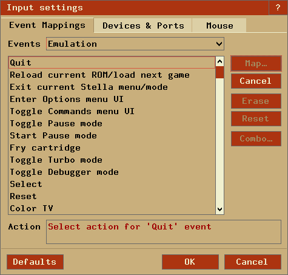Finally there is a 'Combo' button in the 'Emulation Events' tab, accessible only when a Combo event has been selected from the list of events on the left. Clicking 'Combo' will show a dialog similar to the following:
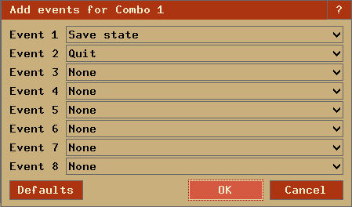In this dialog, you can assign various events to the selected combo event. Note that this only assigns multiple events to the combo; you still need to map the combo event itself to some action, as described in the 'remap an event' section above.
Device and port settings can be configured under the 'Devices & Ports' tab, shown below:
Mouse settings can be configured under the 'Mouse' tab, shown below:
Several options are configurable in the ROM launcher. The size of the launcher and fonts, as well as the 'ROM Info Viewer' can be changed in the UI Settings - Launcher dialog, as shown below:
Most of the options are self-explanatory, except for the 'ROM info width' and 'Image path...', which are described below.
ROM Info Viewer
Stella supports viewing images and ROM properties of the currently selected ROM in the ROM launcher. Image support is automatic, as long as your image directory contains any images in the appropriate format. The label (if existing) and the number of matching images are displayed under the current image. The mouse, the ROM Launcher hotkeys or the controller can be used to browse multiple images of a ROM.
Notes:The images can have PNG or JPG format. The image names must be identical to either Stella's ROM properties cart name or the ROM's filename. For displaying additional images per ROM, the image names must be extended with '_#', where '#' is a number. The image label is read from the image's metadata. For PNGs, the 'iTxt' chunk, keyword 'Title', for JPGs, the EXIF field 'ImageDescription' is used. An archive of updated snapshots is available on the Stella webpage. This archive may be updated periodically as new ROMs are found, and also for each new release of Stella. In case no snapshot is found, you can provide a default image named 'default_snapshot.png' or 'default_snapshot.jpg'. Note that the snapshots can be any size (e.g. generated by Stella); they will be resized accordingly.
The ROM Info Viewer's width can be defined between 0% (off) and 100%. The value is relative to the launcher width. For too small or too large values, Stella will automatically correct the width at runtime so that the ROM names and the current ROM's information always have enough space.The following snapshots illustrate the various font sizes and rom info widths:
ROM Info Viewer width at 40%, UI sized 800x480, small launcher font, bottom buttons enabled:
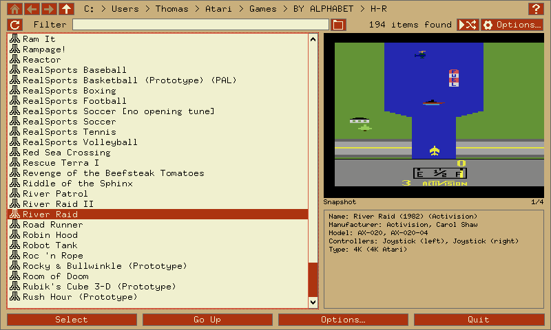ROM Info Viewer width at 32%, UI sized 900x720, medium launcher font, bottom buttons disabled:
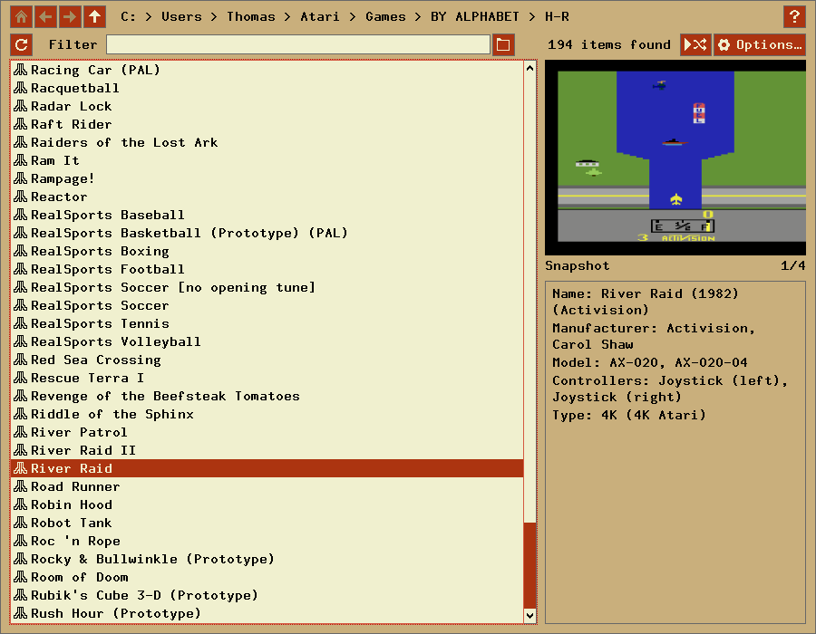ROM Info Viewer width at 50% , UI sized 1280x900, large launcher font, bottom buttons disabled:
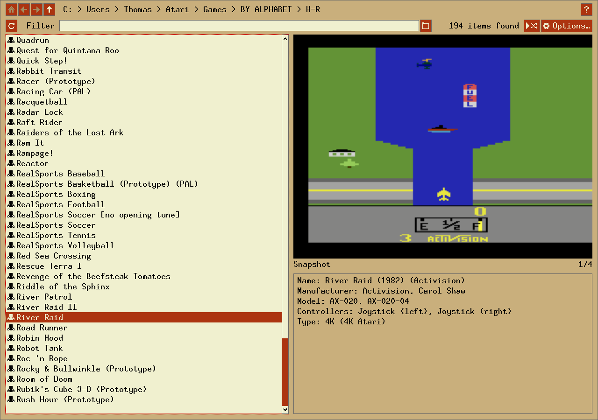The dialog items at the top can be used to navigate your folders and to define the listed files:
- Quick folder navigation buttons; the path display allows direct navigation by clicking an element.
- Open this help for the launcher.
- Reload the file list.
- The 'Filter' text box can be used to narrow down the results in the ROM listing. When this box is empty, all files are shown. Typing characters here will show only those files that match that pattern. For example, typing 'Activision' will show only files that contain the word 'Activision' in their name. This is very useful for quickly finding a group of related ROMs. Note that the search is not case sensitive, so you don't need to worry about capital or lower-case letters. You also can use '*' and '?' as wildcards. E.g. for '(198?)*atari' only ROMs from the 1980s made by Atari will be listed.
Display either files from current directory only, or all subdirectories too.
- Load a random ROM from the current file list.
Favorite ROMs and Directories
Stella allows to manually favor ROMs and directories and also automatially tracks all played ROMs. These ROMs are presented in three virtual directories:
Favorites: Lists all ROMs and directories manually favored by the user (see ROM Launcher Context Menu).
Recently Played: Contains the recently played ROMs. By default the latest 20 ROMs are tracked (the Command Line parameter '-maxrecentroms' allows changing the number of tracked ROMs).
Most Popular: Stella automatically creates a list of most frequently and lately played ROMs. This list is presented here.
The directories are only displayed when they are not empty (e.g. no favored ROMs) and are only present in the current ROM path. Their default ROM sort order can be changed (see ROM Launcher Context Menu).
ROM Launcher Context Menu
The ROM launcher also contains a context menu, opened by clicking the right mouse button in the ROM list or by a long controller button press. This context menu can contain the following items:
Remove from recently played/most popular (or 'Control + X'): Removes the selected ROM from the current virtual folder.
Add to/remove from favorites (or 'Control + F'): Toggles the favorite state of the selected ROM or directory.
Game properties (or 'Control + G'): Opens the Game properties dialog.
Power-on options (or 'Control + P'): Opens a dialog whereby ROM properties can be temporarily overridden, and joystick/console buttons can be temporarily held down. Selecting options from this dialog will cause all ROMs launched after that to use those properties you specify. Clicking Defaults will disable its functionality, and use ROM properties as defined by the ROM itself. The dialog is as follows (see Advanced Configuration - Game Properties for more information concerning ROM properties):
High scores (or 'Control + H'): Opens the High Scores dialog for the selected ROM. Only available if high score properties have been setup for the ROM.
Enable/disable file extensions (or 'Control + E'): Toggles the display of the file extensions.
Toggle alternative sorting (or 'Control + S'): Toggles alternative sorting in the virtual directories.
Include/exclude subdirectories (or 'Control + D'): Toggles searching of ROMs in current directory only or all subdirectories too.
Reload listing (or 'Control + R'): Performs a reload of the current file listing.
Stella has the ability to rename all your ROMs according to the name specified in the ROM properties database. This is useful if you've downloaded ROMs in DOS 8.3 naming format, and wish the filenames to be more descriptive, or the current filenames are too large to see in the launcher.
This feature is accessible from Options => Audit ROMs, and is only available while in ROM launcher mode. The dialog box for this feature is as follows:

Simply select the ROM path with the 'Audit path' button, and click the 'Audit' button. The ROMs will then be renamed according to their internal properties. When the operation is complete, the number of ROMs that were renamed (as well as ones that weren't) will be shown.
There are several items to take note of:
- THIS OPERATION CANNOT BE UNDONE. I cannot stress this enough; if you aren't completely sure you want to rename your ROMs, don't use this function. There is no undo feature, and one won't be added.
- Only filenames that Stella considers to be valid ROMs will be considered. Currently, this means files with extensions described in "Supported File formats". Files which don't have these extensions will be ignored.
- If a valid ROM doesn't have a properties entry, it will be ignored.
Stella supports real Atari 2600 joysticks, paddles, driving controllers and trackballs (CX22/CX80 'Trak-Ball', Atari and Amiga mouse) using the Stelladaptor and 2600-daptor devices.
Stella can use up to two adaptors; any extra ones are ignored. Stelladaptor devices will be automatically detected and configured. The actual controllers can be plugged/unplugged while the emulator is running, although you will need to restart the game currently being emulated.
The detection and configuration is as follows:
- The first device found will act as the left game port on a real Atari. Depending on the device, Stella will detect it as either the left joystick, left paddles A & B, the left driving controller, left keyboard, etc.
- The second device found will act as the right game port on a real Atari. Depending on the device, Stella will detect it as either the right joystick, right paddles A & B, the right driving controller, right keyboard, etc.
- Any other devices will be ignored.
- The assignment ordering of Stelladaptor/2600-daptor to port can be redefined with 'saport' (see description in Using the Command Line) and dynamically with the 'Control + 1' key combo.
Stella supports a real AtariVox device for the speech/SpeakJet portion of the controller. You will need a real AtariVox device as well as some means of connecting it to your computer (some sort of serial port/USB adaptor). There should be drivers for your serial convertor, which allow your particular operating system to 'see' the device (configuring this is outside the scope of this document). Once your operating system properly detects the AtariVox, you will need to tell Stella which serial port it is connected to. This is done by using the '-avoxport' command line argument, or by setting it in the UI under the 'Devices & Ports' tab in Advanced Configuration - Input Devices.
Note that you must use the entire name of the port as specified by your operating system. For example, in Windows this would be COM1, COM2, etc.; Linux and macOS tend to use names similar to '/dev/xxxxxx'. For now, only Linux/UNIX, macOS, and Windows are supported.
Support for the EEPROM portion of the AtariVox and SaveKey is currently emulated. That is, a file will be created on your computer simulating the EEPROM; the actual EEPROM hardware itself will not be accessed or modified. This is very useful in the testing stages of creating a new game, since writing to a real EEPROM many times will eventually wear it out.
The location of EEPROM files will depend on the version of Stella, as follows:
Linux/Unix $HOME/.config/stella/nvram/atarivox_eeprom.dat
$HOME/.config/stella/nvram/savekey_eeprom.datMacintosh $HOME/Library/Application Support/Stella/nvram/atarivox_eeprom.dat
$HOME/Library/Application Support/Stella/nvram/savekey_eeprom.datWindows %APPDATA%\Stella\nvram\atarivox_eeprom.dat
%APPDATA%\Stella\nvram\savekey_eeprom.datIf using 'basedir'
or 'baseinappdir'_BASEDIR_/nvram/atarivox_eeprom.dat
_BASEDIR_/nvram/savekey_eeprom.datNote that these EEPROM files will be created when necessary, and initialized as a real EEPROM would be (containing all $FF). The files can be manually deleted, which is very useful in testing cases where a ROM is accessing the EEPROM for the first time. You can also reset the EEPROM to a clean state.
Several developer related options can be configured in the 'Developer Settings' dialog. Two sets ('Player settings', 'Developer settings') allow easy adjustment of all settings for different use cases (playing or developing games) at once.
Developer Settings dialog (Emulator)
Developer Settings dialog (TIA):
Developer Settings dialog (Video):
Developer Settings dialog (Time Machine)
Developer Settings dialog (Debugger)
Many more options are available for ROM developers, which are described in different sections of this manual, as follows:
- Developer key-combo shortcuts, used to change TIA state dynamically (ie, while the emulation is still running). See Keyboard Layout - Developer Keys for more information.
- Commandline options influencing emulation state. See Using the Command Line - Developer Commands for more information.
- Viewing TIA/console information overlaid on the TIA image. This option can be enabled from the command line or using the Alt-L key combo, and is extremely useful for viewing the current scanline count and associated frames per second, bankswitch and display formats, etc. The following shows an example of this information:
The three lines of output describe the following:
- Number of scanlines in current frame, associated framerate, and resulting display format. Note that the framerate shown is the internal, virtual framerate (it's calculated from the number of scanlines). If the '*' character is present, it means the display format was auto-detected as shown. For the given example, the format was auto-detected as 'NTSC'.
- Effective emulation speed displayed as frames per second and user defined emulation speed displayed as percentage relative to normal speed.
- Cartridge information. If the '*' character is present, it means the bankswitch format was auto-detected as shown. The item in round brackets indicates ROM size. For the given example, the bankswitch type was auto-detected as 4K, and the file size was 4K (4096 bytes).
Finally, Stella contains an extensive, built-in debugger. Have a look at this page for integrated debugger documentation.
Stella will remember when you change a setting or game property or save a new high score. It will use saved data the next time you start the emulator. The data is stored in an SQLite database which can be edited outside of Stella (e.g. with DB Browser for SQLite).
Settings can be changed either at the command line or while the emulation is running. The database can contain your default options and eliminates the need to specify them on the command line. Any options specified on the command line will override those in the user database.
To manually edit the settings, browse the data in the table of the same name. The table has two columns. The first column contains the setting command, which is the same as the one specified on the Command Line (without the '-' character). The second column holds the value, which is dependent on the command.
For example, the following table illustrates how command line and settings entries are similar:
Command Line Column setting Column value -video opengl video opengl -volume 75 volume 75 -center 1 center 1 (or true) The database file is named 'stella.sqlite3' and has a special, non-configurable location depending on which version of Stella you use:
Linux/Unix $HOME/.config/stella/ Macintosh $HOME/Library/Application Support/Stella/ Windows %APPDATA%\Stella\ If using 'basedir'
or 'baseinappdir'_BASEDIR_/
In addition to the stella.sqlite3 file, there may also be a file stella.sqlite3-wal. This file is part of the database and must not be deleted!
Stella contains support for Bob Colbert's Cheetah cheat codes, as well as an extended Stella-specific type of cheat code that works on bankswitched ROMs.
To add/remove/edit a cheat code, enter the 'Cheat Code' dialog:
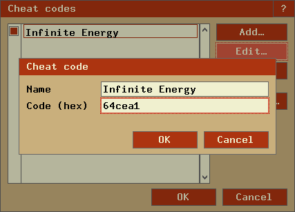Currently, there are three types of cheatcodes available, all of which must be entered in hexadecimal format:
Per-frame RAM cheats:
Evaluated each frame, and apply to RAM only. Format as follows:4-digit code: c041 c0 = address 41 = data- Cheetah codes, which are explained in detail on Bob Colbert's web page, along with a list of codes for various games. Cheetah codes don't support bankswitched ROMs, so they only work for 2K or 4K ROMs. Format as follows:
6-digit (cheetah) code: aaaddc aaa = address - $f000 dd = data c = count - 1- Stella extended cheats are similar to Cheetah codes, except that they can be 7 or 8 digits long, with the extra digits used for the bank number:
7-digit (stella) code: baaaddc b = bank (0 to $f) aaa = address - $f000 dd = data c = count - 1 8-digit (stella) code: bbaaaddc bb = bank (0 to $ff) aaa = address - $f000 dd = data c = count - 1There's also the concept of one shot codes. These codes work exactly the same as above, except they aren't saved. They are evaluated once and immediately discarded.
Here are a few cheat codes we've found:
Pitfall (standard Cheetah codes): 5b0ea1 - infinite lives 723ea1 - infinite time aa5??0 - set starting level, ?? = 01 to ff (d0 is kinda neat) Battlezone (Stella extended codes): 1236ea1 - infinite lives Ms Pac-Man (Stella extended codes): 108fea1 - infinite livesThe name of the cheat database file will depend on the version of Stella, as follows:
Linux/Unix $HOME/.config/stella/stella.cht Macintosh $HOME/Library/Application Support/Stella/stella.cht Windows %APPDATA%\Stella\stella.cht If using 'basedir'
or 'baseinappdir'_BASEDIR_/stella.cht Stella will require a restart for changes to this file to take effect.
Stella maintains a log of its operations when the program first starts up, and while it is running. In older releases, this information was only viewable from the command line. However, the current release allows you to see this information from within the UI. This can be selected from the main Options menu, where it is labelled "System Logs". Clicking on the button will show a window similar to the following:
The log levels are self-explanatory (None, Basic, Verbose). The "Print to console" option emulates the behaviour of older versions of Stella, whereby the logged output is also shown on the command line from which Stella was launched (if it was launched in that fashion). Finally, the current contents of the system log can be saved to your home directory by clicking the "Save log to disk" button.
Stella uses game properties to specify the "best" emulator settings for a game. As of version 2.2 of Stella, a default ROM database of properties are built-in, but you may modify these through the properties table in the user database or within the corresponding Game Properties dialogs. This user database will contain all properties modified by the user. So this means that when you upgrade Stella, your personal properties settings are preserved.
Property File
Besides storing the properties in the User Database, you can create a property file per game using the `Export...` button in the Game Properties dialog. This property file consists of the properties for a single game. For example the general format of a property file is:
; Comments "Cart.MD5" "Value" "Property#1" "Value" "Property#2" "Value" ...The Cart.MD5 property must be defined, all other properties are optional.
Properties
Stella supports the properties described below:
Emulation Properties
Cart.Type Indicates the bankswitching type for the game. The value of this property must be either Auto or one of the following (for more information about bankswitching see Kevin Horton's 2600 bankswitching document or the documentation in each cartridge's source code file) types. Types marked as (¹) do currently have no reliable auto-detection, those marked as (²) are not fully supported in the debugger.
Note: If 'Filter' is checked, only the bankswitching types matching the ROM size are listed.
Type Description File Extension
(to force type)03e0 8K Brazilian Parker Bros .03e, .03e0 0840 8K EconoBanking .084, .0840 0FA0 8K Fotomania .0FA, .0FA0 2IN1 ¹ 4-64K Multicart (2 games) .2N1 4IN1 ¹ 8-64K Multicart (4 games) .4N1 8IN1 ¹ 16-64K Multicart (8 games) .8N1 16IN1 ¹ 32-128K Multicart (16 games) .16N, .16N1 32IN1 ¹ 64-128K Multicart (32 games) .32N, .32N1 64IN1 ¹ 64/128K Multicart (64/128 games) .64N, .64N1 128IN1 ¹ 256/512K Multicart (128/256 games) .128, .128N1 2K 32-2048 bytes Atari .2K 3E 512K Tigervision + 32K RAM .3E 3EX 512K Tigervision + 256K RAM .3EX 3E+ 3E+ (TJ modified 3E) .3EP, .3E+ 3F 512K Tigervision .3F 4A50 ² 64K 4A50 + RAM .4A5, .4A50 4K 4K Atari .4K 4KSC CPUWIZ 4K + RAM .4KS, .4KSC AR ² Supercharger .AR BF CPUWIZ 256K .BF BFSC CPUWIZ 256K + RAM .BFS, .BFSC BUS Experimental .BUS CDF Chris, Darrell, Fred (includes CDFJ/CDFJ+) .CDF CM ¹ Spectravideo CompuMate .CM CTY ² CDW - Chetiry .CTY CV CommaVid extra RAM .CV DF CPUWIZ 128K .DF DFSC CPUWIZ 128K + RAM .DFS, .DFSC DPC Pitfall II .DPC DPC+ Enhanced DPC .DPP, .DPC+ E0 8K Parker Bros .E0 E7 8-16K M Network .E7 .E78, .E78K EF 64K Homestar Runner .EF EFSC 64K Homestar Runner + RAM .EFS, .EFSC F0 Dynacom Megaboy .F0 F4 32K Atari .F4 F4SC 32K Atari + RAM .F4S, .F4SC F6 16K Atari .F6 F6SC 16K Atari + RAM .F6S, .F6SC F8 8K Atari .F8 F8SC 8K Atari + RAM .F8S, .F8SC FA CBS RAM Plus .FA FA2 CBS RAM Plus 24/28K .FA2 FC Amiga Power Play Aracde 16/32K .FC FE 8K Activision (aka SCABS) .FE GL ² 4 or 6K GameLine Master Module .GL MDM Menu Driven Megacart .MDM MVC Movie Cart .MVC SB 128-256K SUPERbanking .SB TVBOY 512K TV Boy (127 games) .TVB, .TVBOY UA 8K UA Ltd. .UA UASW 8K UA Ltd. (swapped banks) .UASW WD Wickstead Design (Pink Panther) .WD WDSW Wickstead Design (Pink Panther) (bad) .WDSW X07 64K AtariAge .X07 Cart.StartBank Indicates which bank to use for reading the reset vector. Display.Format Indicates the television format the game was designed for. The value must be Auto or one of the following. Types marked as (¹) do currently have no reliable auto-detection. A format can be enforced by using one of the following pattern in the filename.
Format Filename Pattern (to force format) NTSC NTSC, NTSC60, NTSC 60, NTSC-60, PAL-M PAL PAL, PAL50, PAL 50, PAL-50 SECAM ¹ SECAM, SECAM50, SECAM 50, SECAM-50 NTSC50 ¹ NTSC50, NTSC 50, NTSC-50, PAL-N PAL60 ¹ PAL60, PAL 60, PAL-60 SECAM60 ¹ SECAM60, SECAM 60, SECAM-60 Display.VCenter Indicates the offset for the vertical center of the display. The value must be n such that -20 <= n <= 20. Display.Phosphor Indicates whether the phosphor effect should be emulated or not. The value must be Yes or No. Display.PPBlend Indicates the amount of blending which will occur while using the phosphor effect. The value must be n such that 0 <= n <= 100. The default value is whatever is specified for tv.phosblend. Cart.Sound Indicates if the game should use 1 or 2 channels for sound output. All original Atari 2600 machines supported 1 channel only, but some homebrew games have been written to take advantage of stereo sound mods. The value must be Mono or Stereo. Console Properties
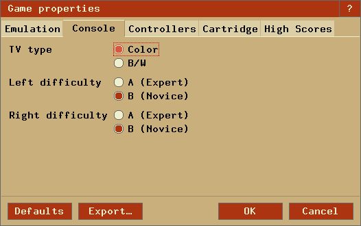
Console.TVType Indicates the default television setting for the game. The value must be Color or BW. Console.LeftDiff Indicates the default difficulty setting for the left player. The value must be A or B. Console.RightDiff Indicates the default difficulty setting for the right player. The value must be A or B. Controller Properties

Controller.Left
Controller.Right
Indicates what type of controller the left and right player uses. The value must be either Auto or one of the following types. Types marked as (¹) do not have auto-detection yet.
Type Description Joystick Atari's famous black joystick that was originally included with the system. BoosterGrip ¹ A controller add-in that plugs directly into the joystick port and provides a pass-through for the joystick. In doing so, it provides the two independent buttons. Paddles Standard paddle controllers for use with games such as Breakout and Warlords. One pair of controller per connector (allows for 4-player Warlords). Paddles_IAxis ¹ Same as Paddles, except the axes are inverted. Paddles_IAxDr ¹ Same as Paddles, except both the axes and direction of movement are inverted. Driving ¹ Looks like a paddle, but allows 360° movement. Only one unit per connector, unlike paddles which were sold in pairs. Keyboard Also known as the Star Raiders controller, functionally identical to the Kid's Controller and Keyboard Controller. Game included an overlay with commands, for use with Star Raiders. AmigaMouse Commodore Amiga computer mouse. AtariMouse Atari ST computer mouse. Trakball Standard Atari 2600 CX22/CX80 'Trak-Ball' controller. AtariVox ¹ A SpeakJet based unlimited-vocabulary speech/sound synthesizer with 32K EEPROM. SaveKey A 32K EEPROM for saving high scores, etc. (the EEPROM portion of an AtariVox). Genesis Sega Genesis controller, which can be used similar to a Booster Grip, giving an extra button. Joy2B+ Joy 2B+ controller, which can be used similar to a Booster Grip, giving two extra buttons. CompuMate ¹ Spectravideo CompuMate (if either left or right is set, CompuMate is used for both). Lightgun Atari XG-1 compatible Light Gun. MindLink ¹ MindLink controller. KidVid Kid Vid Voice Module. Audio files can be downloaded e.g. from AtariAge. Put unzipped .WAV files into Stella's base directory (see properties or palette files below for details). Note: Stella supports playing the games without audio files too. QuadTari QuadTari controller, limited support (see below). Console.SwapPorts Indicates that the left and right ports should be swapped internally. This is used for ROMs like 'Raiders of the Lost Ark' where the 1st player's joystick is plugged into the right joystick port. The value must be Yes or No. Controller.SwapPaddles Indicates that the left and right paddles in a particular port should be swapped. This is used for ROMs like 'Demons to Diamonds' where the default paddle is left paddle B, not left paddle A. Other ROMs such as 'Tac-Scan' default to right paddle B, which can be set using both 'Controller.SwapPaddles' and 'Console.SwapPorts'. The value must be Yes or No. Controller.PaddlesXCenter Defines the horizontal center of the paddles (range -10..30). Controller.PaddlesYCenter Defines the vertical center of the paddles (range -10..30). Controller.MouseAxis Indicates how the mouse should emulate virtual controllers. In 'Auto' mode, the system decides how to best use the mouse. Otherwise, XY indicates how to use the X/Y axis (ie, 02 is paddle0/paddle2). Currently, the mouse X-axis and left button are tied together, as are the Y-axis and right button. The value must be Auto or XY, as follows: An optional second parameter (default of 100) indicates how much of the paddle range the mouse should emulate.
Id Controller 0 Left Paddle A 1 Left Paddle B 2 Right Paddle A 3 Right Paddle B 4 Left Driving 5 Right Driving 6 Left MindLink 7 Right MindLink QuadTari Properties

Controller.Left1
Controller.Left2
Controller.Right1
Controller.Right2
Indicates which controllers are plugged into one of the four QuadTari ports. The value must be one of the following types.
Type Description Joystick Atari's famous black joystick that was originally included with the system. Paddles Standard paddle controllers, only (up to 8) fire buttons supported for QuadTari. Driving Looks like a paddle, but allows 360° movement. Only one unit per connector, unlike paddles which were sold in pairs. AtariVox A SpeakJet based unlimited-vocabulary speech/sound synthesizer with 32K EEPROM. SaveKey A 32K EEPROM for saving high scores, etc. (the EEPROM portion of an AtariVox). Cartridge Properties
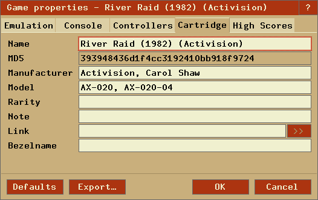
Cart.Name Indicates the actual name of the game. When you save snapshots, load/save state files, or use the ROM Audit Mode functionality, this is the name that will be used for the respective file(s). Cart.MD5 Indicates the MD5 checksum of the ROM image as a string of hexadecimal digits. Stella uses this property while attempting to match a game with its block of properties. If the value of the property matches the MD5 checksum of the ROM image then Stella uses that block of properties for the game. You can use the GNU md5sum program, which is included with most Linux distributions, to calculate the MD5 checksum of a ROM image. Cart.Manufacturer Indicates the game's manufacturer. Cart.ModelNo Indicates the manufacturer's model number for the game. Cart.Rarity Indicates how rare a cartridge is, based on the scale described on AtariAge. Cart.Note Contains any special notes about playing the game. Cart.Url Defines a website link, e.g. for additional information or to the AtariAge store. Click the ">>" button to open the website. Bezel.Name Defines the file name (without suffix) used for loading the bezel image. If the name fails or is not defined, the cart name is used. If that fails too, 'default.png' is tried. If no image can be found, no bezel is displayed. Note: The bezel images should reside in their own directory, separate from the launcher images. High Scores Properties

Cart.Highscore Contains the high score definition data as JSON string. It can be defined in the 'High Scores Properties' dialog as follows:
Item Description Enable High Scores Check to enable high score definitions. Variations Defines the number of game variations. If the number is set to 1, the following variation definitions are not required. Address Defines the address (in hex format) where the variation number is stored. BCD Defines whether the variation number is stored as decimal or BCD. 0-based Defines whether the variation number is stored zero-based. Digits Select the number of score digits displayed. 0-digits Select the number of trailing score digits which are fixed to 0. BCD Defines whether the score is stored as decimal or BCD. Invert Inverts the score ordering. Check if a lower score (e.g. a timer) is better. Addresses Defines the addresses (in hex format, highest byte first) where the score is stored. The number of addresses required is defined by the number of digits and trailing, fixed 0-digits. Special Defines a short label (up to 5 chars) for the optional, game's special value (e.g. 'Level', 'Wave', 'Round'...). If no label is defined, the following special definitions are not required. Address Defines the address (in hex format) where the special number is stored. BCD Defines whether the special number is stored as decimal or BCD. 0-based Defines whether the special number is stored is stored zero-based. Note Allows defining some free text which explains the high scores properties. To find the required definition values, you can use Stella's built-in debugger. Please share your results, so that we can extend the list of supported games.
Note: To verify the definitions, the current values of the addresses and the resulting score are displayed.
The buttons at the bottom of the dialogs work as follows:
- Defaults: Reset the properties to those built into Stella.
- Export: Export the properties for the currently selected ROM only to a properties file in the user's default storage directory.
- OK: Merge/commit any changes into the ROM properties database, which contains info of all ROMs.
- Cancel: Revert any changes in the dialog and cancel the operation.
The name of the properties file will depend on the version of Stella, as follows:
Linux/Unix $HOME/.config/stella/stella.pro Macintosh $HOME/Library/Application Support/Stella/stella.pro Windows %APPDATA%\Stella\stella.pro If using 'basedir'
or 'baseinappdir'_BASEDIR_/stella.pro Note: For manual changes to the property files Stella will require a restart to take effect.
An Atari 2600 palette consists of 128 colours, which are different for the three major television standards (NTSC, PAL, SECAM). Stella supports two built-in palettes and one user-defined palette for each format. These are set using the '-palette' option, and are described as follows:
standard The default palette from Stella 1.4 onwards. z26 The palette from the z26 emulator. user An external palette file, supplied by the user. custom A palette generate from user-defined phase shift. A user-defined palette has certain restrictions, further described as follows:
- The palette file must be at least 792 bytes long. Colours are stored in 24-bit RGB, with the first byte for red, the second for green, the third for blue, for a total of 3 bytes per colour.
- The first 384 bytes of the file (128 * 3) will be used for the NTSC palette. The next 384 bytes (128 * 3) will be for the PAL palette. The next 24 bytes (8 * 3) will be for the SECAM palette, which consists of eight distinct colours. Any extra data in the file will be ignored.
- The PAL colour-loss effect is calculated within Stella. You do not need to specify those colours in the palette file.
The name of the palette file will depend on the version of Stella, as follows:
Linux/Unix $HOME/.config/stella/stella.pal Macintosh %HOME/Library/Application Support/Stella/stella.pal Windows %APPDATA%\Stella\stella.pal If using 'basedir'
or 'baseinappdir'_BASEDIR_/stella.pal Note that to actually use the external palette, the palette file must exist and be valid, and the palette option should be set to user (in Video Settings dialog). The current ROM will have to be reloaded for changes to this file to take effect.
The following games (incl. TV system variations and many hacks, excluding prototypes) are currently configured to save high scores.Classic games
- Asteroids (Atari)
- Atlantis (Imagic)
- Barnstorming (Activision)
- Beamrider (Activision)
- Berzerk (Atari)
- Breakout (Atari)
- Centipede (Atari)
- Chopper Comand (Activision)
- Circus Atari (Atari)
- Cosmic Ark (Imagic)
- Decathlon (Activision)
- Defender 2/Stargate (Atari)
- Demon Attack (Imagic)
- Dig Dug (Atari)
- Donkey Kong (Coleco)
- Dragster (Activision)
- Elk Attack (Atari)
- Enduro (Activision)
- Frogger (Parker Bros)
- Frostbite (Activision)
- Galaxian (Atari)
- Gigolo/Cathouse Blues (Mystique)
- Grand Prix (Activision)
- Gremlins (Atari)
- H.E.R.O. (Activision)
- Halloween (Wizard Video Games)
- Jr. Pac-Man (Atari)
- Jungle Hunt (Atari)
- Kaboom! (Activision)
- Keystone Kapers (Activision)
- Mario Bros. (Atari)
- MegaMania (Activision)
- Millipede (Atari)
- Missile Command (Atari)
- Moon Patrol (Atari)
- Ms. Pac-Man (Atari)
- Phoenix (Atari)
- Pitfall! (Activision)
- Pitfall II (Activision)
- Q-Bert (Atari)
- Seaquest (Activision)
- Sky Jinks (Activision)
- Solaris (Atari)
- Space Invaders (Atari)
- Spider-Man (Parker Bros)
- Stampede (Activision)
- Star Wars - The Arcade Game (Parker Bros)
- Star Wars - The Empire Strikes Back (Parker Bros)
- StarMaster (Activision)
- Super Breakout (Atari)
- Superman (Atari)
- Vanguard (Atari)
- Yars' Revenge (Atari)
Homebrews
- Conquest of Mars (ChampGames, John W. Champeau)
- Draconian (SpiceWare, Darrell Spice Jr.)
- Lady Bug (ChampGames, John W. Champeau)
- Oystron (Piero Cavina)
- Qb (Andrew Davie)
- Seawolf (Manuel Rotschkar)
- Star Fire (Manuel Rotschkar)
- Stay Frosty 2 (SpiceWare, Darrell Spice Jr.)
- SWOOPS! (Thomas Jentzsch)
- Ultra SCSIcide (Joe Grand)
Everyone is more than welcome to help us to fill the gaps by defining more games.
Bradford W. Mott started developing Stella during the fall of 1995, and Stephen Anthony has maintained the project since around 2004. Over the years, a number of people from around the world have contributed to the project. Some people have provided technical help while others have offered suggestions and praise. The Stella Team is grateful for all the help and support it has received over the years. A (likely incomplete) list of the people who have played a part in bringing Stella to you is available on the main Stella webpage Credits List. If we've missed someone, please let us know.
Version 2, June 1991
Copyright (C) 1989, 1991 Free Software Foundation, Inc. 59 Temple Place - Suite 330, Boston, MA 02111-1307, USA Everyone is permitted to copy and distribute verbatim copies of this license document, but changing it is not allowed.
The licenses for most software are designed to take away your freedom to share and change it. By contrast, the GNU General Public License is intended to guarantee your freedom to share and change free software--to make sure the software is free for all its users. This General Public License applies to most of the Free Software Foundation's software and to any other program whose authors commit to using it. (Some other Free Software Foundation software is covered by the GNU Library General Public License instead.) You can apply it to your programs, too.
When we speak of free software, we are referring to freedom, not price. Our General Public Licenses are designed to make sure that you have the freedom to distribute copies of free software (and charge for this service if you wish), that you receive source code or can get it if you want it, that you can change the software or use pieces of it in new free programs; and that you know you can do these things.
To protect your rights, we need to make restrictions that forbid anyone to deny you these rights or to ask you to surrender the rights. These restrictions translate to certain responsibilities for you if you distribute copies of the software, or if you modify it.
For example, if you distribute copies of such a program, whether gratis or for a fee, you must give the recipients all the rights that you have. You must make sure that they, too, receive or can get the source code. And you must show them these terms so they know their rights.
We protect your rights with two steps: (1) copyright the software, and (2) offer you this license which gives you legal permission to copy, distribute and/or modify the software.
Also, for each author's protection and ours, we want to make certain that everyone understands that there is no warranty for this free software. If the software is modified by someone else and passed on, we want its recipients to know that what they have is not the original, so that any problems introduced by others will not reflect on the original authors' reputations.
Finally, any free program is threatened constantly by software patents. We wish to avoid the danger that redistributors of a free program will individually obtain patent licenses, in effect making the program proprietary. To prevent this, we have made it clear that any patent must be licensed for everyone's free use or not licensed at all.
The precise terms and conditions for copying, distribution and modification follow.
0. This License applies to any program or other work which contains a notice placed by the copyright holder saying it may be distributed under the terms of this General Public License. The "Program", below, refers to any such program or work, and a "work based on the Program" means either the Program or any derivative work under copyright law: that is to say, a work containing the Program or a portion of it, either verbatim or with modifications and/or translated into another language. (Hereinafter, translation is included without limitation in the term "modification".) Each licensee is addressed as "you".
Activities other than copying, distribution and modification are not covered by this License; they are outside its scope. The act of running the Program is not restricted, and the output from the Program is covered only if its contents constitute a work based on the Program (independent of having been made by running the Program). Whether that is true depends on what the Program does.
1. You may copy and distribute verbatim copies of the Program's source code as you receive it, in any medium, provided that you conspicuously and appropriately publish on each copy an appropriate copyright notice and disclaimer of warranty; keep intact all the notices that refer to this License and to the absence of any warranty; and give any other recipients of the Program a copy of this License along with the Program.
You may charge a fee for the physical act of transferring a copy, and you may at your option offer warranty protection in exchange for a fee.
2. You may modify your copy or copies of the Program or any portion of it, thus forming a work based on the Program, and copy and distribute such modifications or work under the terms of Section 1 above, provided that you also meet all of these conditions:
Thus, it is not the intent of this section to claim rights or contest your rights to work written entirely by you; rather, the intent is to exercise the right to control the distribution of derivative or collective works based on the Program.
In addition, mere aggregation of another work not based on the Program with the Program (or with a work based on the Program) on a volume of a storage or distribution medium does not bring the other work under the scope of this License.
3. You may copy and distribute the Program (or a work based on it, under Section 2) in object code or executable form under the terms of Sections 1 and 2 above provided that you also do one of the following:
If distribution of executable or object code is made by offering access to copy from a designated place, then offering equivalent access to copy the source code from the same place counts as distribution of the source code, even though third parties are not compelled to copy the source along with the object code.
4. You may not copy, modify, sublicense, or distribute the Program except as expressly provided under this License. Any attempt otherwise to copy, modify, sublicense or distribute the Program is void, and will automatically terminate your rights under this License. However, parties who have received copies, or rights, from you under this License will not have their licenses terminated so long as such parties remain in full compliance.
5. You are not required to accept this License, since you have not signed it. However, nothing else grants you permission to modify or distribute the Program or its derivative works. These actions are prohibited by law if you do not accept this License. Therefore, by modifying or distributing the Program (or any work based on the Program), you indicate your acceptance of this License to do so, and all its terms and conditions for copying, distributing or modifying the Program or works based on it.
6. Each time you redistribute the Program (or any work based on the Program), the recipient automatically receives a license from the original licensor to copy, distribute or modify the Program subject to these terms and conditions. You may not impose any further restrictions on the recipients' exercise of the rights granted herein. You are not responsible for enforcing compliance by third parties to this License.
7. If, as a consequence of a court judgment or allegation of patent infringement or for any other reason (not limited to patent issues), conditions are imposed on you (whether by court order, agreement or otherwise) that contradict the conditions of this License, they do not excuse you from the conditions of this License. If you cannot distribute so as to satisfy simultaneously your obligations under this License and any other pertinent obligations, then as a consequence you may not distribute the Program at all. For example, if a patent license would not permit royalty-free redistribution of the Program by all those who receive copies directly or indirectly through you, then the only way you could satisfy both it and this License would be to refrain entirely from distribution of the Program.
If any portion of this section is held invalid or unenforceable under any particular circumstance, the balance of the section is intended to apply and the section as a whole is intended to apply in other circumstances.
It is not the purpose of this section to induce you to infringe any patents or other property right claims or to contest validity of any such claims; this section has the sole purpose of protecting the integrity of the free software distribution system, which is implemented by public license practices. Many people have made generous contributions to the wide range of software distributed through that system in reliance on consistent application of that system; it is up to the author/donor to decide if he or she is willing to distribute software through any other system and a licensee cannot impose that choice.
This section is intended to make thoroughly clear what is believed to be a consequence of the rest of this License.
8. If the distribution and/or use of the Program is restricted in certain countries either by patents or by copyrighted interfaces, the original copyright holder who places the Program under this License may add an explicit geographical distribution limitation excluding those countries, so that distribution is permitted only in or among countries not thus excluded. In such case, this License incorporates the limitation as if written in the body of this License.
9. The Free Software Foundation may publish revised and/or new versions of the General Public License from time to time. Such new versions will be similar in spirit to the present version, but may differ in detail to address new problems or concerns.
Each version is given a distinguishing version number. If the Program specifies a version number of this License which applies to it and "any later version", you have the option of following the terms and conditions either of that version or of any later version published by the Free Software Foundation. If the Program does not specify a version number of this License, you may choose any version ever published by the Free Software Foundation.
10. If you wish to incorporate parts of the Program into other free programs whose distribution conditions are different, write to the author to ask for permission. For software which is copyrighted by the Free Software Foundation, write to the Free Software Foundation; we sometimes make exceptions for this. Our decision will be guided by the two goals of preserving the free status of all derivatives of our free software and of promoting the sharing and reuse of software generally.
NO WARRANTY
11. BECAUSE THE PROGRAM IS LICENSED FREE OF CHARGE, THERE IS NO WARRANTY FOR THE PROGRAM, TO THE EXTENT PERMITTED BY APPLICABLE LAW. EXCEPT WHEN OTHERWISE STATED IN WRITING THE COPYRIGHT HOLDERS AND/OR OTHER PARTIES PROVIDE THE PROGRAM "AS IS" WITHOUT WARRANTY OF ANY KIND, EITHER EXPRESSED OR IMPLIED, INCLUDING, BUT NOT LIMITED TO, THE IMPLIED WARRANTIES OF MERCHANTABILITY AND FITNESS FOR A PARTICULAR PURPOSE. THE ENTIRE RISK AS TO THE QUALITY AND PERFORMANCE OF THE PROGRAM IS WITH YOU. SHOULD THE PROGRAM PROVE DEFECTIVE, YOU ASSUME THE COST OF ALL NECESSARY SERVICING, REPAIR OR CORRECTION.
12. IN NO EVENT UNLESS REQUIRED BY APPLICABLE LAW OR AGREED TO IN WRITING WILL ANY COPYRIGHT HOLDER, OR ANY OTHER PARTY WHO MAY MODIFY AND/OR REDISTRIBUTE THE PROGRAM AS PERMITTED ABOVE, BE LIABLE TO YOU FOR DAMAGES, INCLUDING ANY GENERAL, SPECIAL, INCIDENTAL OR CONSEQUENTIAL DAMAGES ARISING OUT OF THE USE OR INABILITY TO USE THE PROGRAM (INCLUDING BUT NOT LIMITED TO LOSS OF DATA OR DATA BEING RENDERED INACCURATE OR LOSSES SUSTAINED BY YOU OR THIRD PARTIES OR A FAILURE OF THE PROGRAM TO OPERATE WITH ANY OTHER PROGRAMS), EVEN IF SUCH HOLDER OR OTHER PARTY HAS BEEN ADVISED OF THE POSSIBILITY OF SUCH DAMAGES.